1 Scope📝
This standard is an extension of the overall OPC Unified Architecture standards and defines an information model that conforms to the PackML object model defined in ISA-TR88.00.02-2015 Machine and Unit States: An Implementation Example of ISA-88, and in the OMAC (Organization for Machine and Automation Control) PackML Unit/Machine Implementation Guide, referred to collectively as PackML. The PackML object model describes a standard way to monitor and control a wide variety of production equipment, following the models defined in the ANSI/ISA 88 standard. ISA-TR88.00.02 has been implemented by manufacturers and machine builders worldwide on various control platforms to increase speed to production, ease line integration and improve reliability. PackML defines standard state models for external control of a piece of equipment, a standard mode model for determining which state model to follow, standard tag names and tag values to command the equipment, determine the status of the equipment, and perform administration of the equipment. The PackML goal is to provide an easy to use and easy to test method of integration of equipment control, into a production line.
The modelling targets of this standard shall exist in an OPC UA AddressSpace. This standard does not consider the modelling targets that are identified in other standards or vendor specifications.
OPC Foundation
OPC is the interoperability standard for the secure and reliable exchange of data and information in the industrial automation space and in other industries. It is platform independent and ensures the seamless flow of information among devices from multiple vendors. The OPC Foundation is responsible for the development and maintenance of this standard.
OPC UA is a platform independent service-oriented architecture that integrates all the functionality of the individual OPC Classic specifications into one extensible framework. This multi-layered approach accomplishes the original design specification goals of:
- Platform independence: from an embedded microcontroller to cloud-based infrastructure
- Secure: encryption, authentication, authorisation, and auditing
- Extensible: ability to add new features including transports without affecting existing applications
- Comprehensive information modelling capabilities: for defining any model from simple to complex
Other Organization
[INFORMATION ABOUT OTHER ORGANIZATION CONTRIBUTING TO THE SPECIFICATION]
2 Normative references📝
The following documents are referred to in the text in such a way that some or all of their content constitutes requirements of this document. For dated references, only the edition cited applies. For undated references, the latest edition of the referenced document (including any amendments and errata) applies.
- OPC Unified Architecture - Part 1: Overview and Concepts http://www.opcfoundation.org/documents/10000-1/
- OPC Unified Architecture - Part 2: Security Model http://www.opcfoundation.org/documents/10000-2/
- OPC Unified Architecture - Part 3: Address Space Model http://www.opcfoundation.org/documents/10000-3/
- OPC Unified Architecture - Part 4: Services http://www.opcfoundation.org/documents/10000-4/
- OPC Unified Architecture - Part 5: Information Model http://www.opcfoundation.org/documents/10000-5/
- OPC Unified Architecture - Part 6: Mappings http://www.opcfoundation.org/documents/10000-6/
- OPC Unified Architecture - Part 7: Profiles http://www.opcfoundation.org/documents/10000-7/
- OPC Unified Architecture - Part 8: Data Access http://www.opcfoundation.org/documents/10000-8/
- OPC Unified Architecture - Part 9: Alarms & Conditions http://www.opcfoundation.org/documents/10000-9/
- OPC Unified Architecture - Part 10: Programs http://www.opcfoundation.org/documents/10000-10/
- OPC Unified Architecture - Part 11: Historical Access http://www.opcfoundation.org/documents/10000-11/
- OPC Unified Architecture - Part 13: Aggregates http://www.opcfoundation.org/documents/10000-13/
- OPC Unified Architecture - Part 19: Dictionary Reference http://www.opcfoundation.org/documents/10000-19/
- OPC Unified Architecture - Part 100: Devices http://www.opcfoundation.org/documents/10000-100/
- Internet X.509 Public Key Infrastructure Certificate and Certificate Revocation List (CRL) Profile https://datatracker.ietf.org/doc/html/rfc5280
- Machine and Unit States: An implementation example of ANSI/ISA-88.00.01 https://www.isa.org/products/isa-tr88-00-02-2022-machine-and-unit-states-an-imp
- ANSI/ISA-88.01-1995: Batch Control Part 1: Models and Terminology https://www.isa.org/store/products/product-detail/?productId=116649
- UA companion specification for IEC61131-3 https://opcfoundation.org/developer-tools/specifications-unified-architecture/opc-unified-architecture-plcopen-information-model/
3 Terms, definitions and abbreviations📝
3.1 Overview📝
It is assumed that basic concepts of OPC UA information modelling are understood in this document. This document will use these concepts to describe the OPC UA for PackML Information Model. For the purposes of this document, the terms and definitions given in OPC 10000-1, OPC 10000-2, OPC 10000-3, OPC 10000-4, OPC 10000-5, OPC 10000-6, OPC 10000-7, OPC 10000-8, OPC 10000-9, OPC 10000-10, OPC 10000-11, OPC 10000-13, OPC 10000-19, OPC 10000-100, IETF RFC 5280, ISA-TR88.00.02-2022, ANSI/ISA-88.01-1995 and OPC 30000 as well as the following apply.
NOTE
Note that OPC UA terms and terms defined in this document are italicized in the document.
3.2 Terms and definitions📝
3.2.1 PackML<Term>
General
Note 1 to entry:
This standard adopts adding a PackML prefix to all PackML defined terms that are used in this standard that are also defined by OPC. The <Term> is the terminology defined by PackML. This allows the terminology used in PackML to be easily distinguished from terminology defined in OPC UA.
3.2.2 PackMLUnit
a concept that defines a collection of associated modules that can carry out one or more major processing activities.
Note 1 to entry:
In PackML Unit and Machine are used to define the same thing and can at times be interchanged.
3.2.3 PackMLTag
a concept that represents named data element that is used to command, read status, or provide administration of a unit.
3.2.4 PackMLStateModel
a concept that represents a state model of the operational state of a unit.
3.2.5 PackMLMode
a concept that represents the mode of operation of a unit, indicating which state model is currently active.
3.3 Abbreviations📝
| AC | Alarm and Condition |
| DA | Data Access |
| DCS | Distributed Control System |
| HA | Historical Access |
| HMI | Human Machine Interface |
| MES | Manufacturing Execution System |
| OCS | Open Control System |
| PLC | Programmable Logic Controller |
| UML | Unified Modelling Language |
| URI | Uniform Resource Identifier |
| XML | Extensible Markup Language |
4 Concept📝
4.1 Overview📝
When the ANSI/ISA-88.01-1995 standard was applied to applications across a plant, there was a need to align the terminologies, models and key definitions between different process types: continuous, batch, and discrete processes. Discrete processes involve machines found in the packaging, converting, and material handling applications. The operation of these machines is typically defined by the OEM, system integrator, end user, or is industry specific.
OMAC (Organization for Machine Automation and Control) created a task group with members from technology providers, OEMs, system integrators, and end users to generate the PackML guidelines as a method to show how the ANSI/ISA-88.01-1995 concepts could be extended into packaging machinery and other types of machines typically used in assembly lines, filling lines, and other production lines.
The purpose of PackML is to:
- Define a standard state-based model for automated machines.
- Identify definitions for common terminology.
- Explain to practitioners how to use state programming for automated machines.
- Provide references to actual implementation examples and templates from automation and control vendors.
- Identify a common tag structure for automated machines in order to:
- Provide for "connect & pack" functionality
- Provide functional interoperability and a consistent look and feel across the plant floor.
- Provide consistent tag structure for connection to plant MES and enterprise systems.
If automated machinery is modelled in an ANSI/ISA-88.01-1995 physical hierarchy, the example mapping shown in Figure 1 is possible, from ISA-TR88.00.02-2022. The example in this document will assume that a machine can represent the unit level in the ISA88 hierarchy.
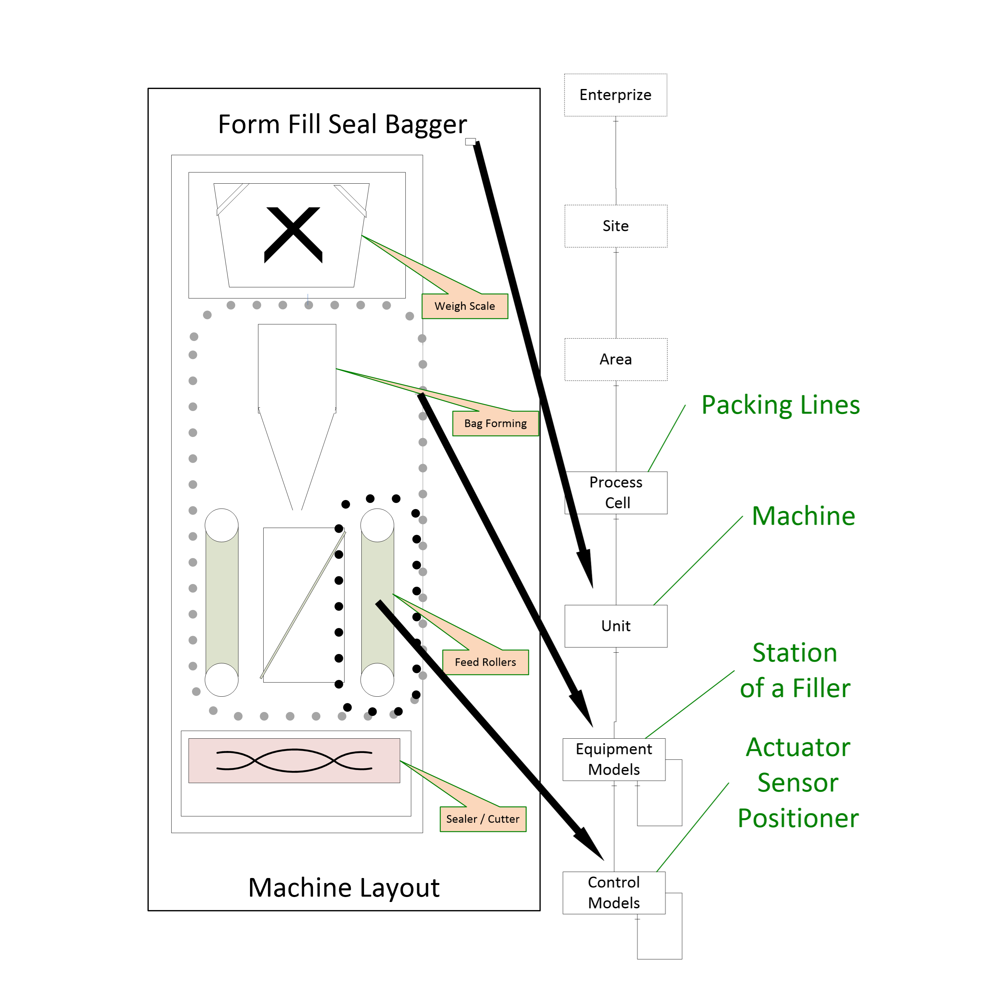
In the figure, the OPC UA interface and the PackML model might exist at the machine level. The communication and interactions below this level are machine specific. Some machines might have multiple Units which communicate using OPC UA / PackML, but they might also only expose the Machine using the OPC UA PackML interface to other Machines in packaging line or to the Packaging line controller.
4.2 PackML Overview📝
4.2.1 Introduction📝
For an OPC UA user that may not be familiar with PackML, the following section provides a brief overview of key features that PackML provides along with a little background related to PackML and the concepts behind it.
4.2.2 Why PackML?📝
The Organization for Machine Automation and Control (OMAC) was formed to help manufacturers work together to find new and innovative ways to be successful in their production operations. OMAC brought together leading manufacturers representing End-User Manufacturers, OEM Machine Builders, System Integrators, Technology Providers, and Non-Profit / Government Agency organizations to address issues that confront global manufacturing today. OMAC aims to collectively derive common solutions for both technical and non-technical issues in the development, implementation, and commercialization of open, modular architecture control technologies.
Manufacturing systems are made of collections of equipment, often from multiple suppliers, usually each with its own specific and custom interface. In order to make this collection of equipment operate together as a complete system, there is an integration effort required, and it is often time consuming and custom for each supplier.
PackML stands for Packaging Machine Language and is an interface standard originally used in batch manufacturing in the packaging industry but which is now used in multiple different types of production and assembly lines. The primary objective of PackML is to bring a common "look and feel" and operational consistency to all machines that make up a production line. PackML provides:
- Standard defined machine states and operational flow
- Overall Equipment Effectiveness (OEE) data
- Root Cause Analysis (RCA) data
- Flexible recipe schemes and common SCADA or MES inputs
PackML has been implemented in multiple formats for different industrial networks, with a proven benefit of reducing the integration time for adding new equipment to existing lines, or installing new lines.
4.2.3 PackML Elements📝
In order to provide a standard interface PackML defines three elements:
1. PackML Unit Modes - A standard model that is used to control which state is being used (Producing, Maintenance, Manual, ….).
2. PackML StateMachine - Standard state machine models that are used to represent the internal operational state of the machine/unit. (Note: StateMachine may change for Units and for the Mode of the unit.)
3. PackTags -A standard set of tag names and extension used to control the mode and state, send commands to the machine/unit, and monitor the status of the machine/unit.
These three aspects will be translated to OPC UA models.
4.2.4 Standard Modes📝
A Unit can be in different modes, for example Producing, Maintenance, Manual, Clean, Calibration, etc. A Unit control mode is an ordered subset of states and commands that determines the strategy carried out by the Unit process, as shown in Figure 2. For example, the producing mode is used when the unit is producing, a manual mode may be used when the unit is being manually controlled for troubleshooting.
The states that a unit can be in depends on the mode. In the producing mode there is a state called SUSPENDED, where the equipment is not running due to an external event, but this state is not available in maintenance mode, neither is the COMPLETE state.
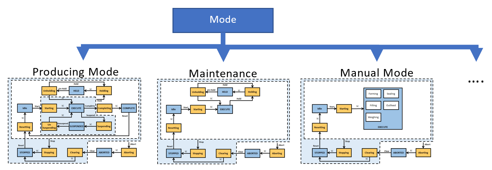
PackML includes a standard manner of changing modes as well as displaying the current mode. For additional information please see the ISA-TR88.00.02-2015.
4.2.5 Standard States📝
PackML Interface State Model is used to visualize and control the state of a unit/machine. The PackML Interface State Model is a state model that represents the Unit/Machine State in a standardized manner. The interface description is based on a state model, a state description and related control commands. For additional information see ISA-TR88.00.02-2022.
4.2.6 Standard Tag Names📝
At its core, PackML is the definition of standard tag names and standard values for the tags. These are used to control the state model of the unit (command tags), determine the state and status of the equipment (status tags), and administer the equipment (admin tags).
4.2.7 PackML Object Model📝
4.2.7.1 Overview📝
The PackML object model is composed of a series of tags. These tags can be one of three general type of tags Command Tags, Status Tags and Administrative Tags.
4.2.7.2 Command Tags📝
Command tags allow interaction with the state machine and general functionality of the server. Command tags include changing units, changing state machines. For additional detail see ISA-TR88.00.02-2022. In OPC UA command tags are generally mapped to Methods.
4.2.7.3 Status Tags📝
Status tags provide information about the state of the machine or device. This includes feedback from the commands issued and the general status. For additional detail see ISA-TR88.00.02-2022.
4.2.7.4 Admin Tags📝
Admin tags provide information about alarming in the machines or device. This include Alarm history and some summary statistics about the machine or device. For additional detail see ISA-TR88.00.02-2022.
4.2.8 Standard Tag Values📝
4.2.8.1 Overview📝
Several PackTags have specific values defined.
4.2.8.2 Machine Speed📝
This describes the set point for the current speed of the unit/machine in primary packages per minute. Keeping speed in a primary package unit of measure (UOM) allows for easier control integration. The primary package UOM is the normalized rate for the machine, normalized to a value chosen on the line.
The following example is for a bottle line running at balance line speed of 1000 packages/minute. The UOM chosen is equivalent to be the actual count of the Filler, or Labeler.
| Machine | Actual Pack Counts | Primary Packages (UOM) |
|---|---|---|
| Bulk depalletizer | 41.667 (24 pack -> 1000/24=41.667) | 1.000 |
| Filler | 1.000 | 1.000 |
| Labeler | 1.000 | 1.000 |
| Packer | 66.667 (15 pack -> 1000/15=66.667) | 1.000 |
4.2.8.3 Material Interlock📝
Indicates materials are ready for processing. It is comprised of a series of bits with 1 equalling ready or not low, 0 equalling not ready, or low. Each bit represents a different user material. The word contains bits that indicate when a critical material or process parameter is ready for use. It can also be used for production, and/or indication of low condition. This information may be sent to the unit machine at any time as the interlock information changes.
The format and meaning of the material interlock bits are determined by the machine/unit supplier, as shown in the example below:
| Machine/Unit | Material Interlock, bit # | Material Description |
|---|---|---|
| Filler | 0 | 500 ml Bag |
| Filler | 1 | Flaked Cereal |
| Labeler | 0 | Small Box |
| Labeler | 1 | 500 ml Bag |
| Labeler | 2 | Small Box Label |
4.2.8.4 Remote Interface Structure📝
An array of structure elements used for coordinating upstream or downstream machines in a cell with multiple unit machines.
The array is a length that is equal to the number of machines that will be sending commands. This could be expanded if a machine is capable of receiving material from multiple upstream and/or downstream machines, thereby receiving multiple commands and parameters.
This can be used for machine to machine coordination without supervisory control, or for tightly controlled units under supervisory control. These tags are typically used for consumption within the unit machine procedure. Specifically, if a remote controller was issuing commands, the commands would be read by this tag and used in the unit machine.
4.3 OPC UA Overview📝
4.3.1 Introduction📝
For PackML users that may not be familiar with OPC UA the following section provides a brief overview of key features that OPC UA provides.
4.3.2 What is OPC UA?📝
OPC UA is an open and royalty free set of standards designed as a universal communications protocol. While there are numerous communication solutions available, OPC UA has several advantages:
- A state of art security model (see OPC 10000-2).
- A fault tolerant communication protocol.
- An information modelling framework that allows application developers to represent their data in a way that makes sense to them.
OPC UA has a broad scope which delivers for economies of scale for application developers. This means that a larger number of high quality applications at a reasonable cost are available. When combined with powerful semantic models such as PackML, OPC UA makes it easier for end users to access data via generic commercial application.
The OPC UA model is scalable from small devices to ERP systems. OPC UA devices process information locally and then provide that data in a consistent format to any application requesting data - ERP, MES, PMS, Maintenance Systems, HMI, Smartphone or a standard Browser, for examples. For a more complete overview see OPC 10000-1.
4.3.3 Basics of OPC UA📝
As an Open Standard, OPC UA is based on standard Internet technologies - TCP/IP, HTTPS, Ethernet, and XML.
As an Extensible Standard, OPC UA provides a set of services (OPC 10000-4) and a basic information model framework. This framework provides an easy manner for creating and exposing vendor defined information in a standard way. More importantly all OPC UA Clients are expected to be able to discover and use vendor defined information. This means OPC UA users can benefit from the economies of scale that come with generic visualization and historian applications. This specification is an example of an OPC UA Information Model designed to meet the needs of developers and users.
OPC UA Clients can be any consumer of data from another device on the network to browser based thin clients and ERP systems. The full scope of OPC UA applications are shown in Figure 3.
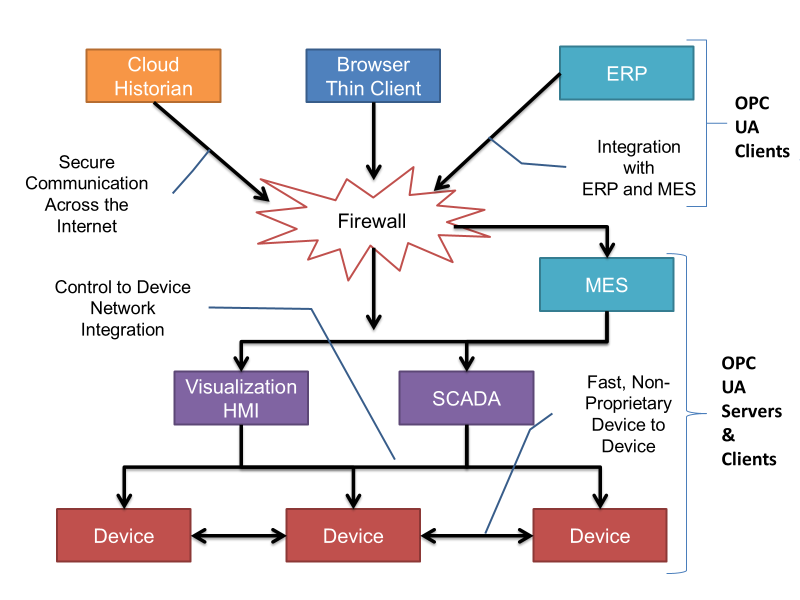
OPC UA provides a robust and reliable communication infrastructure having mechanisms for handling lost messages, failover, heartbeat, etc. With its binary encoded data, it offers a high-performing data exchange solution. Security is built into OPC UA as security requirements become more and more important especially since environments are connected to the office network or the internet and attackers are starting to focus on automation systems.
4.3.4 Information Modelling in OPC UA📝
4.3.4.1 Concepts📝
OPC UA provides a framework that can be used to represent complex information as Objects in an address space which can be accessed with standard web services. These Objects consist of Nodes connected by References. Different classes of Nodes convey different semantics. For example, a Variable Node represents a value that can be read or written. The Variable Node has an associated DataType that can define the actual value, such as a string, float, structure etc. It can also describe the variable value as a variant. A Method Node represents a function that can be called. Every Node has a number of Attributes including a unique identifier called a NodeId and non-localized name called as BrowseName. An Object representing a 'Reservation' is shown in Figure 4.
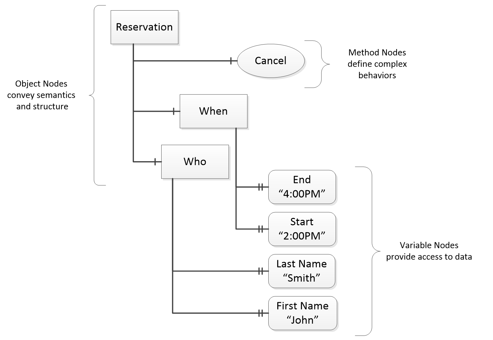
Object and Variable Nodes are called Instance Nodes and they always reference a TypeDefinition (ObjectType or VariableType) Node which describes their semantics and structure. Figure 5 illustrates the relationship between an Instance and its Type Definition.
The Type Nodes are templates that define all of the children that can be present in an Instance of the Type. In the example in Figure 5 the PersonType ObjectType defines two children: First Name and Last Name. All instances of PersonType are expected to have the same children with the same BrowseNames. Within a Type the BrowseNames uniquely identify the child. This means Client applications can be designed to search for children based on the BrowseNames from the Type instead of NodeIds. This eliminates the need for manual reconfiguration of systems if a Client uses Types that multiple devices implement.
OPC UA also supports the concept of sub typing. This allows a modeller to take an existing Type and extend it. There are rules regarding sub typing defined in OPC 10000-3, but in general they allow the extension of a given type or the restriction of a DataType. For example, the modeller may decide that the existing <underline>ObjectType</underline> in some cases needs an additional variable. The modeller can create a Subtype of the object and add the variable. A Client that is expecting the parent type can treat the new Type as if it was of the parent Type. With regard to DataTypes, if a Variable is defined to have a numeric value, a sub type could restrict the value to a float.
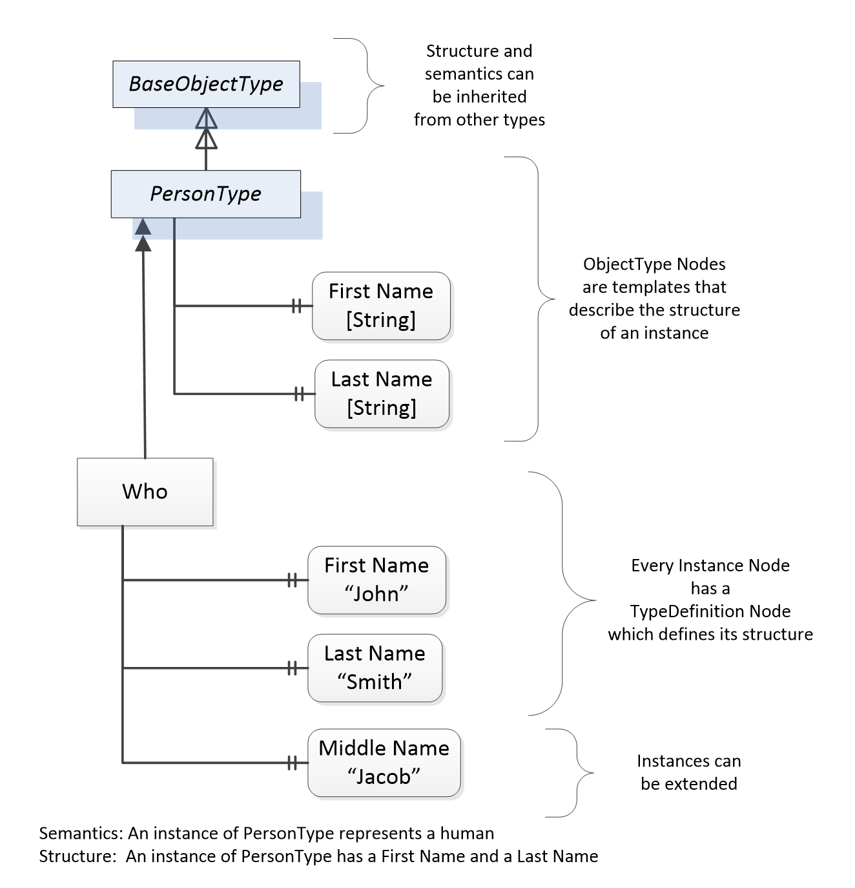
References allow Nodes to be connected together in ways that describe their relationships. All References have a ReferenceType that specifies the semantics of the relationship. References can be hierarchical or non-hierarchical. Hierarchical References are used to create the structure of Objects and Variables. Non-Hierarchical are used to create arbitrary associations. Applications can define their own ReferenceType by creating Subtypes of the existing ReferenceType. Subtypes inherit the semantics of the parent but may add additional restrictions. Figure 6 depicts several references connecting different Objects.
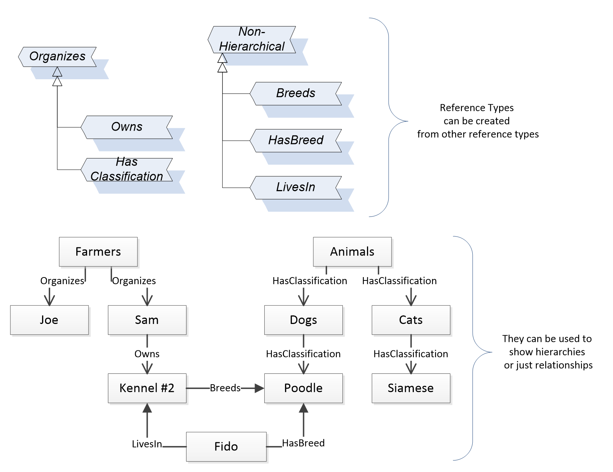
The figures above use a notation that was developed for the OPC UA specification. The notation is summarized in Figure 7. UML representations can also be used; however, the OPC UA notation is less ambiguous because there is a direct mapping from the elements in the figures to Nodes in the address space of an OPC UA server.
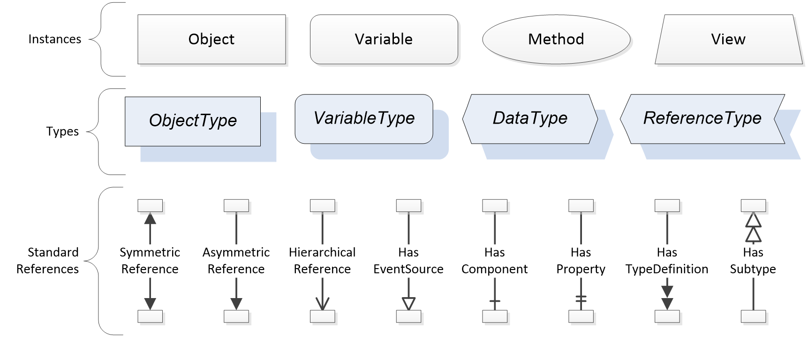
A complete description of the different types of Nodes and References can be found in OPC 10000-3 and the base OPC UA Address space is described in OPC 10000-5.
OPC UA specification defines a very wide range of functionality in its basic information model. It is not expected that all Clients or Servers support all functionality in the OPC UA specifications. OPC UA includes the concept of profiles, which segment the functionality into testable certifiable units. This allows the development of companion specification (such as OPC UA for ISA-95) that can describe the subset of functionality that is expected to be implemented. The profiles do not restrict functionality, but generate requirements for a minimum set of functionality (see OPC 10000-7).
The OPC Foundation also defines a set of information models that provide a basic set of functionality. The Data Access specification (see OPC 10000-8) provides a basic information model for typical data. The Alarm and Condition specification (see OPC 10000-9) defines a standard information model for Alarms and Conditions. The Programs specification (see OPC 10000-10) defines a standard information model for extending the functionality available via method calls and state machines. The Historical Access specification (see OPC 10000-11) defines the information model associated with Historical Data and Historical Events. The aggregates specification (see OPC 10000-13) defines a series of standard aggregate functions that allow a Client to request summary data. Examples of aggregates include averages, minimums, time in state, standard deviation, etc.
4.3.4.2 Namespaces📝
OPC UA allows information from many different sources to be combined into a single coherent address space. Namespaces are used to make this possible by eliminating naming and id conflicts between information from different sources. Namespaces in OPC UA have a globally unique string called a NamespaceUri and a locally unique integer called a NamespaceIndex. The NamespaceIndex is only unique within the context of a Session between an OPC UA Client and an OPC UA Server. All of the web services defined for OPC UA use the NamespaceIndex to specify the Namespace for qualified values.
There are two types of values in OPC UA that are qualified with Namespaces: NodeIds and QualifiedNames. NodeIds are globally unique identifiers for Nodes. This means the same Node with the same NodeId can appear in many Servers. This, in turn, means Clients can have built in knowledge of some Nodes. OPC UA information models generally define globally unique NodeIds for the TypeDefinitions defined by the information model.
QualifiedNames are non-localized names qualified with a Namespace. They are used for the BrowseNames of Nodes and allow the same names to be used by different information models without conflict. The BrowseName is used to identify the children within a TypeDefinitions. Instances of a TypeDefinition are expected to have children with the same BrowseNames. TypeDefinitions are not allowed to have children with duplicate BrowseNames; however, instances do not have that restriction.
4.3.4.3 Companion Specifications📝
An OPC UA companion specification for an industry specific vertical market describes an information model by defining ObjectTypes, VariableTypes, DataTypes and ReferenceTypes that represent the concepts used in the vertical market. Table 1 contains an example of an ObjectType definition.
| Attribute | Value | ||||
|---|---|---|---|---|---|
| BrowseName | WidgetType | ||||
| IsAbstract | False | ||||
| References | NodeClass | BrowseName | DataType | TypeDefinition | ModellingRule |
|---|---|---|---|---|---|
| Subtype of the BaseObjectType from OPC 10000-5. | |||||
| HasProperty | Variable | Color | String | PropertyType | Mandatory |
| HasProperty | Variable | Flavor | LocalizedText | PropertyType | Mandatory |
| HasProperty | Variable | Rank | Int32 | PropertyType | Mandatory |
The BrowseName is a non-localized name for an ObjectType.
IsAbstract is a flag indicating whether instances of the ObjectType can be created.
The bottom of the table lists the child nodes for the type. The Reference is the type of reference between the Object instance and the child Node. The NodeClass is the class of Node. The BrowseName is the non-localized name for the child. The DataType is the structure of the Value accessible via the Node (only used for Variable NodeClass Nodes) and the TypeDefinition is the ObjectType or VariableType for the child.
The ModellingRule indicates whether a child is Mandatory or Optional. It can also indicate cardinality. Note that the BrowseName is not defined if the cardinality is greater than 1. Figure 8 visually depicts the ObjectType defined in Table 1 along with two instances of the ObjectType.
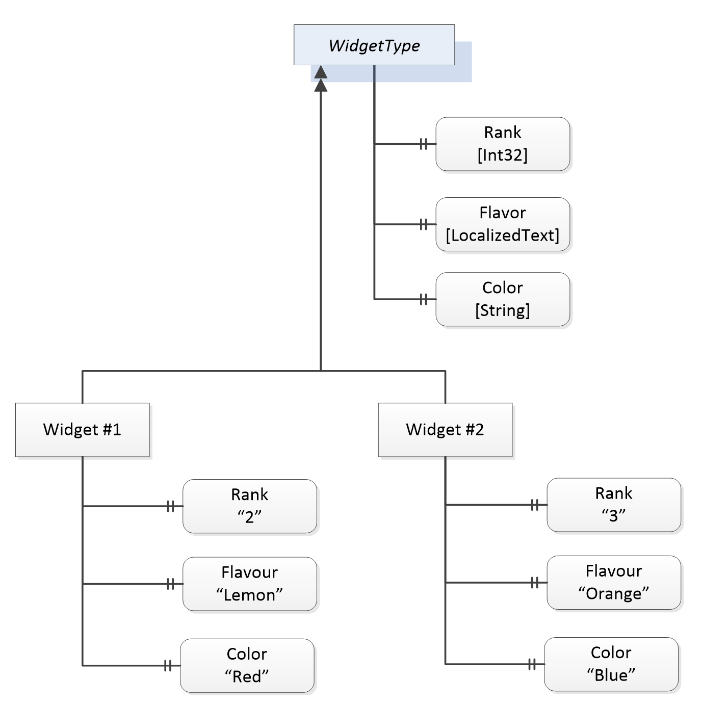
5 Modelling Approach of PackML📝
The modelling approach for generating an UA model from the PackML specification follows the following general concepts / suggestions.
In PackML a number of standard tag names and standard values are defined, OPC UA defines standard types from which any number of instances can be created. Each instance will contain the same items as defined in the type, allowing easy access for Clients.
When possible OPC UA constructs will be used to represent parallel PackML concepts including:
- StateMachines to reflect the state of the system
- Methods to issue commands to the Server
- DataTypes
5.1 OPC UA Notation📝
This standard uses the ModellingRules OptionalPlaceholder and MandatoryPlaceholder to define instance declarations, and defines a rule that the BrowseName of instance declarations having an OptionalPlaceholder or MandatoryPlaceholder ModellingRule be enclosed in angle brackets (<>). Originally, this rule is defined in OPC 10000-3 as a recommendation. This naming rule is also used in the description of a table. The BrowseName of a Node that has OptionalPlaceholder or MandatoryPlaceholder ModellingRule are described with angle brackets, which denotes that the name is not fixed. For example, BrowseName of Property is described as <PropertyName> in graphical notation and tables results in a Property that can have any name.
6 PackML Data Representation Model📝
6.1 General📝
The OPC UA PackML information model is a representation of the PackML data model in OPC ObjectTypes, VariableTypes, DataTypes and ReferenceTypes.
This model generates standard types. All PackML types will be defined in their own Namespace and will begin with "PackML" A key point is a standard ObjectType representation of the StateMachines defined in PackML. The model also defines some standard instances that are expected as a starting point for this model.
The following conventions apply to ObjectType, VariableType and DataType naming:
- All ObjectTypes include "ObjectType" as part of the name
- All StateMachines will end in "StateMachine", all States will end in "State", All Transitions will end in "Transition"
- All DataTypes that are structures include "DataType" as part of the name, this is to be able to differentiate them from any VariableTypes that will just end in Type.
- All enumerations will end in "Enum", to clearly identify that it is an enumeration.
- All base DataTypes (int32, float, …) used in the OPC UA server will be those defined in OPC UA, see OPC 10000-6 for more detail on the representation of the datatypes. This specification is typically implemented in a PLC, Annex B provides a non-normative copy of the DataType mapping described in PLC Open
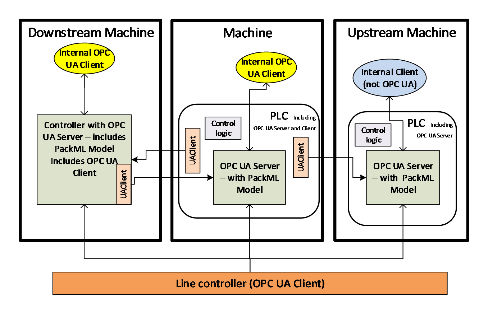
Figure 9 illustrates the scope of PackML in a typical environment, with units acting as OPC UA Servers and a line controller as an OPC UA Client application. It defines a standard set of interfaces to and from a unit/machine, so that it can be controlled as an element of an overall production line. It maps the internal states of the unit into a standard state model, and internal commands into a standard set of commands, hiding the details of the actual implementation of the unit's code.
Figure 9 also illustrates another typical example in which units perform peer-to-peer communication to coordinate the states and modes of an entire line. In this situation, each unit could act as both an OPC UA Server (of their own local state) and an OPC UA Client to communicate to upstream and downstream units.
6.2 Instance AddressSpace📝
Figure 10 provides an overview of the instance object model for PackML
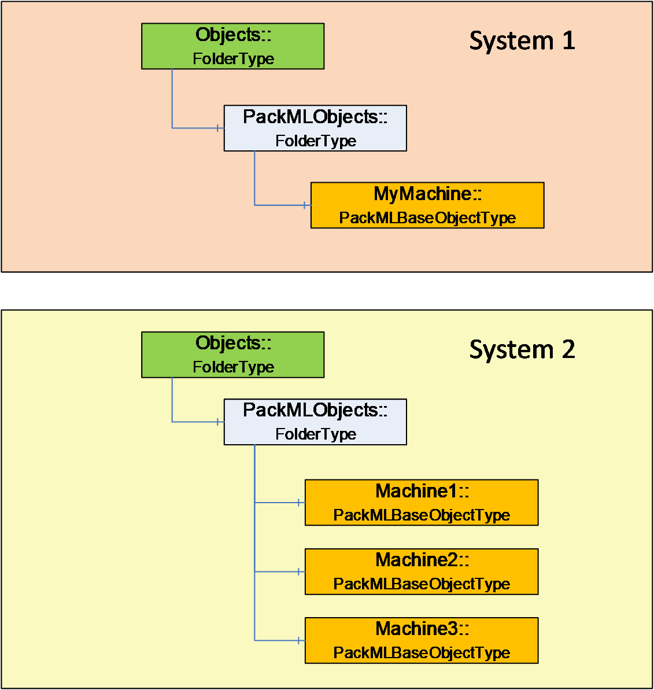
The OPC UA Server shall have a PackMLObjects folder under the OPC defined Objects folder on a UA Server. This folder shall contain one or more instances of PackMLBaseObjectType (see 6.3.2 for definition of PackMLBaseObjectType). A single OPC UA Server might contain a single instance of a PackML system or it might contain multiple PackML systems.
The PackMLObjects node is formally defined in Table 2.
| Attribute | Value | ||
|---|---|---|---|
| BrowseName | PackMLObjects | ||
| References | NodeClass | BrowseName | TypeDefinition |
| Organized by the Objects Folder defined in OPC 10000-5 | |||
| HasTypeDefinition | ObjectType | FolderType | |
6.3 Objects and ObjectTypes📝
6.3.1 Overview📝
The PackML model when adapted to OPC UA results in a number of StateMachines (see section 6.3.5 for a definition). Instances of these StateMachines may not expose all states and transitions at all times. The actual list of AvailableStates and AvailableTransitions are configured and each instance would be defined by either the end user or the machine builder. The PackML model also includes other meta data such as available mode, current mode, see section 6.3.2 for a complete list
6.3.2 PackMLBaseObjectType📝
The PackMLBaseObjectType defines a base type that can be used with any machine or object. This base type provides all required information for a working PackML system.
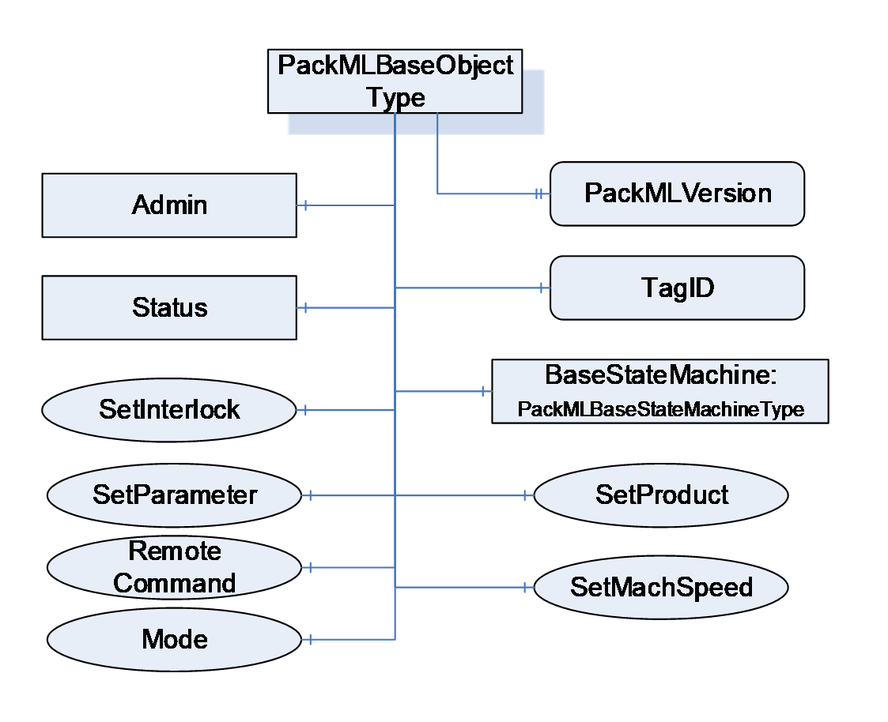
Table 3 formally defines the PackMLBaseObjectType.
| Attribute | Value | |||||
|---|---|---|---|---|---|---|
| BrowseName | PackMLBaseObjectType | |||||
| IsAbstract | False | |||||
| Reference | Node Class | BrowseName | DataType | TypeDefinition | ModellingRule | RW |
| Subtype of the BaseObjectType from OPC 10000-5. | ||||||
| HasProperty | Variable | TagID | String | PropertyType | Optional | R |
| HasProperty | Variable | PackMLVersion | String | PropertyType | Optional | R |
| HasComponent | Object | Admin | PackMLAdminObjectType | Mandatory | ||
| HasComponent | Object | Status | PackMLStatusObjectType | Mandatory | ||
| HasComponent | Object | BaseStateMachine | PackMLBaseStateMachineType | Mandatory | ||
| HasComponent | Method | SetUnitMode | Defined in section 6.7.2 | Mandatory | ||
| HasComponent | Method | SetMachSpeed | Defined in section 6.7.3 | Mandatory | ||
| HasComponent | Method | SetProduct | Defined in section 6.7.4 | Mandatory | ||
| HasComponent | Method | SetParameter | Defined in section 6.7.17 | Mandatory | ||
| HasComponent | Method | RemoteCommand | Defined in section 6.7.15 | Optional | ||
| HasComponent | Method | SetInterlock | Defined in section 6.7.16 | Optional | ||
TagID - provide an additional field in which an associated name (third party cross reference or other string) can be stored. It can also be an additional name used to identify this PackML System.
PackMLVersion - provides the version of the supported OMAC PackML
Admin provides administrative functionality required for the PackML OPC UA server. It is defined in section 6.3.4. The administrative functionality exposed by this Object should be restricted to only users with administrative rights.
Status provides the status information required for a PackML OPC UA Server. It is defined in section 6.3.3.
SetUnitMode method allows an OPC UA Client to change the mode of the machine. The available modes are part of the supported Modes and a Client can pass any of the values listed. The Method may return an error if the requested mode is not allowed based on either the current mode of the machine or the state of the machine. For additional details see the definition of the SetUnitMode Method in 6.7.2
SetMachSpeed Method allows a Client to change the machine speed.
SetProduct Method allows a Client to change the product(s) and the ProcessVariables and Ingredients. For additional details see the definition of SetProduct Method in 6.7.4.
SetParameter Method allows a Client to set the parameters for the machine. For additional details see the definition of SetParameter Method in 6.7.17.
RemoteCommand Method allows a Client to send a command to the UA Server that is to be passed to the PackML Server and or upstream or downstream Servers. Parameters sent to the Remote system are typically used in the EXECUTE and STARTING states for a production task. With the restriction that RemoteCommand Parameter Values are limited to REAL values. For additional details see the definition of the RemoteCommand Method in 6.7.15
SetInterlock method allows a Client to set one of the interlocks associated with the system. For additional details see the definition of the SetInterlock Method in 6.7.16
6.3.3 PackMLStatusObjectType📝
The PackMLStatusObjectType defines an ObjectType that is used to group all of the status information that is part of the PackML information model. It is illustrated in Figure 12
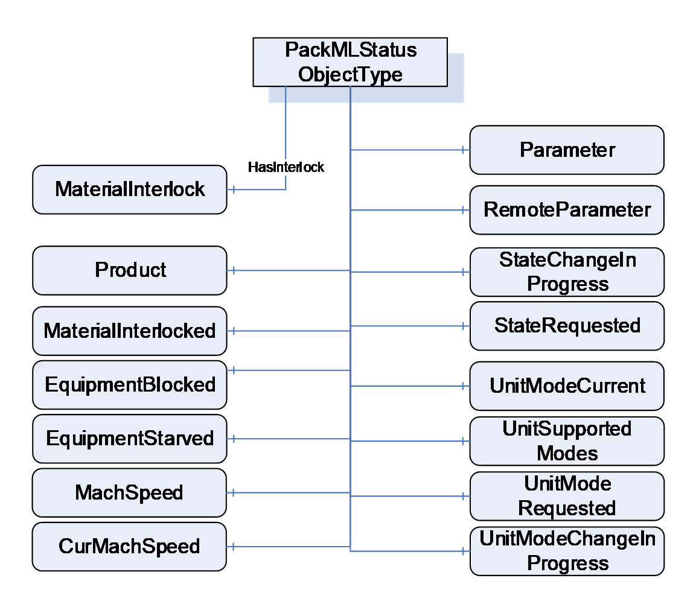
Table 4 formally defines the PackMLStatusObjectType.
| Attribute | Value | |||||
|---|---|---|---|---|---|---|
| BrowseName | PackMLStatusObjectType | |||||
| IsAbstract | False | |||||
| Reference | Node Class | BrowseName | DataType | TypeDefinition | ModellingRule | RW |
| Subtype of the BaseObjectType from OPC 10000-5. | ||||||
| HasComponent | Variable | UnitModeRequested | Boolean | BaseDataVariableType | Optional | R |
| HasProperty | Variable | UnitSupportedModes | NodeId | PropertyType | Mandatory | R |
| HasComponent | Variable | UnitModeCurrent | Enumeration | BaseDataVariableType | Mandatory | R |
| HasComponent | Variable | UnitModeChangeInProcess | Boolean | BaseDataVariableType | Optional | R |
| HasComponent | Variable | StateRequested | Int32 | BaseDataVariableType | Optional | R |
| HasComponent | Variable | StateChangeInProcess | Boolean | BaseDataVariableType | Optional | R |
| HasComponent | Variable | MachSpeed | Float | AnalogItemType | Mandatory | R |
| HasComponent | Variable | CurMachSpeed | Float | AnalogItemType | Mandatory | R |
| HasComponent | Variable | EquipmentBlocked | Boolean | BaseDataVariableType | Mandatory | R |
| HasComponent | Variable | EquipmentStarved | Boolean | BaseDataVariableType | Mandatory | R |
| HasComponent | Variable | MaterialInterlocked | Boolean | BaseDataVariableType | Optional | R |
| HasInterlock | Variable | MaterialInterlock | Boolean[] | BaseDataVariableType | Optional | R |
| HasComponent | Variable | Parameter | PackMLDescriptorDataType[] | BaseDataVariableType | Optional | R |
| HasComponent | Variable | RemoteParameter | PackMLRemoteInterfaceDataType[] | BaseDataVariableType | Optional | R |
| HasComponent | Variable | Product | PackMLProductDataType[] | BaseDataVariableType | Optional | R |
In OPC UA defined StateMachines, a mandatory Variable CurrentState provides the current state of the StateMachine, which is the current state of the PackML device. CurrentState is defined in OPC 10000-5.
UnitModeRequested - If TRUE, indicates that a unit mode change was requested, reflects the status of the Command UnitModeRequested.
UnitSupportedModes - provides the NodeId of the enumeration DataType that describes the available modes for this PackML instance. A Server might have more than one of these instances; each instance might expose a different set of available modes and thus have a different enumeration.
UnitModeCurrent - is used to display the current mode of the instance of this type. The DataType is Enumeration which is abstract, but an instance shall be assigned a concrete enumeration, which corresponds to the enumeration listed in UnitSupportedModes.
UnitModeChangeInProcess - a flag that indicates a unit change has been requested and is in progress
StateRequested - This value is used for state transition checking, to ensure that transitions to a target state can be achieved. The target state, StateRequested, is a numerical value corresponding to a state in the base state model (shown above).
StateChangeInProcess - a flag that indicates that a state change has been requested and is in progress. The StateMachine will report the current state.
MachSpeed - Setpoint speed of the unit.
CurMachSpeed - Current speed of the unit.
EquipmentBlocked - If TRUE, then processing is suspended because downstream equipment is unable to receive material (e.g. downstream buffer is full)
EquipmentStarved - If TRUE, then processing is suspended because upstream equipment is unable to send material.
MaterialInterlocked - a flag that indicates this machine is interlocked. It is a summary of the interlock variable that is associated with this machine.
MaterialInterlock - this is an array and describes the status of the materials that are ready for processing. It is comprised of a series of Boolean with 1 equaling readyor not low, 0 equaling not ready or low. Each bit represents a different user material.
Parameter - Current parameters used in the production job. This reflects the last parameter sent via the SetParameter Method.
RemoteParameter - the last remote parameter that were sent to the machine. This is optional variable is provided only if sending remote parameters are supported, the RemoteCommand Method is provided this variable shall also be provided. For additional details see the RemoteCommand Method definition in 6.7.15.
Product - provides a list of the products supported by this machine. The array is typically needed for machines that run multiple products. It defines the IDs of the products and process & process variables associated with the product. The product data can come from either a local HMI or remote systems and are used to process the product on the unit machine.
6.3.4 PackMLAdminObjectType📝
The PackMLAdminObjectType defines an ObjectType that is used to group all of the Admin information that is part of the PackML information model. It is illustrated in Figure 13.
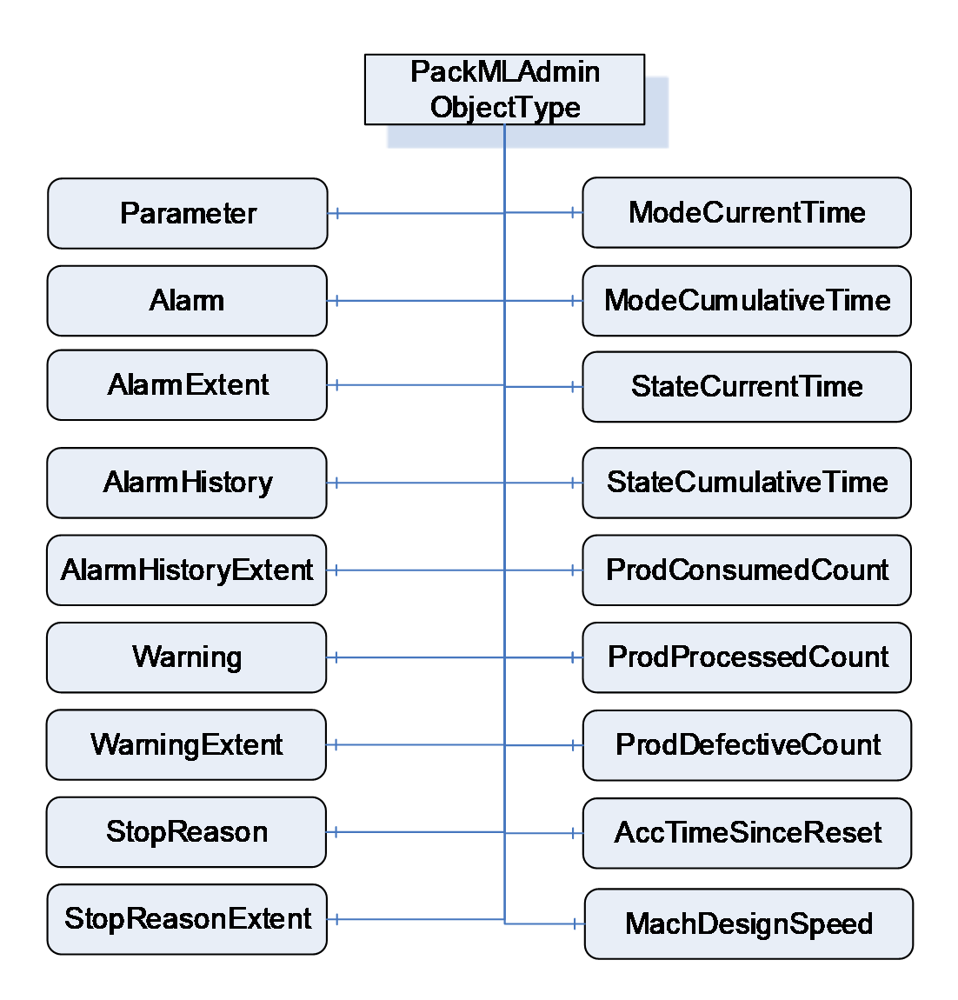
Table 5 formally defines the PackMLAdminObjectType.
| Attribute | Value | |||||
|---|---|---|---|---|---|---|
| BrowseName | PackMLAdminObjectType | |||||
| IsAbstract | False | |||||
| Reference | Node Class | BrowseName | DataType | TypeDefinition | ModelingRule | RW |
| Subtype of the BaseObjectType from OPC 10000-5. | ||||||
| HasComponent | Variable | Parameter | PackMLDescriptorDataType[] | BaseDataVariableType | Optional | R |
| HasAlarm | Variable | Alarm | PackMLEventDataType[] | BaseDataVariableType | Optional | R |
| HasComponent | Variable | AlarmExtent | Int32 | BaseDataVariableType | Optional | R |
| HasAlarmHistory | Variable | AlarmHistory | PackMLEventDataType[] | BaseDataVariableType | Optional | R |
| HasComponent | Variable | AlarmHistoryExtent | Int32 | BaseDataVariableType | Optional | R |
| HasWarning | Variable | Warning | PackMLEventDataType[] | BaseDataVariableType | Optional | R |
| HasComponent | Variable | WarningExtent | Int32 | BaseDataVariableType | Optional | R |
| HasStopReason | Variable | StopReason | PackMLEventDataType | BaseDataVariableType | Optional | R |
| HasComponent | Variable | StopReasonExtent | Int32 | BaseDataVariableType | Optional | R |
| HasComponent | Variable | ModeCurrentTime | Int32[] | BaseDataVariableType | Optional | R |
| HasComponent | Variable | ModeCumulativeTime | Int32[] | BaseDataVariableType | Optional | R |
| HasComponent | Variable | StateCurrentTime | Int32[][] | BaseDataVariableType | Optional | R |
| HasComponent | Variable | StateCumulativeTime | Int32[][] | BaseDataVariableType | Optional | R |
| HasComponent | Variable | ProdConsumedCount | PackMLCountDataType[] | BaseDataVariableType | Optional | R |
| HasComponent | Variable | ProdProcessedCount | PackMLCountDataType[] | BaseDataVariableType | Optional | R |
| HasComponent | Variable | ProdDefectiveCount | PackMLCountDataType[] | BaseDataVariableType | Optional | R |
| HasComponent | Variable | AccTimeSinceReset | Int32 | BaseDataVariableType | Optional | R |
| HasComponent | Variable | MachDesignSpeed | Float | BaseDataVariableType | Optional | R |
Parameter - The parameter tags associated with the local interface are typically used as parameters that are displayed or used on the unit locally, for example from an HMI. These parameters can be used to display any quality, alarm, or machine downtime parameter. The Parameters are typically limited to parameters related the unit. The length of the array is the maximum number of parameters needed.
Alarm - Alarm Events (trigger, value, message, category,…). The alarm tags associated to the local interface are typically used as parameters that are displayed or used on the unit locally, for example from an HMI. These alarm parameters can be used to display any alarm, or machine downtime cause that is currently occurring in the system. The alarms are typically limited to the machine unit. Each machine can define as many alarms as are required for the machine.
AlarmExtent - Defines the maximum number of alarms available, for the machine annunciation or reporting
AlarmHistory - These alarm history parameters can be used to display any alarm history, or machine downtime cause.
AlarmHistoryExtend - associated with the maximum number of alarms needed to be archived or tagged as alarm history for the machine.
Warning - Array of warning information Events. Warnings are general events that do not cause the machine to stop, but may require operator action because a stoppage may be imminent. Warning elements have the same structure as Stop Reason elements.
WarningExtent - Defines the maximum number of warning elements available.
StopReason - A structure for the stop reason Event (similar to Alarms) which define the possible stop reasons (trigger, value, message, category). Stop Reason is typically used for "First Out Fault" Reporting and Other Stoppage Events. The stop reason is the first event captured during an abort, held, suspended or stop event.
StopReasonExtent - Defines the maximum number of stop reason elements or available.
ModeCurrentTime - The current amount of time, in seconds, that the machine has been in each mode. The array index for a mode is the Unit mode value. The values roll over to 0 at 2,147,483,647.
ModeCumulativeTime - The cumulative amount of time, in seconds, that the machine has been in each mode. The array index for a mode is the Unit mode value. The value is the cumulative elapsed time the machine has spent in each mode since its timers and counters were reset. The values roll over to 0 at 2,147,483,647.
StateCurrentTime - The current amount of time, in seconds, that the machine has been in each state for each mode. The first array index for is the Unit mode value, the second array index is the state value.. The values roll over to 0 at 2,147,483,647.
StateCumulativeTime - The cumulative amount of time, in seconds, that the machine has been in each state for each mode. The first array index for is the Unit mode value, the second array index is the state value. The value is the cumulative elapsed time the machine has spent in each mode and state since its timers and counters were reset. The values roll over to 0 at 2,147,483,647
ProdConsumedCount - Represents the material used/consumed in the production machine. An example of tag usage would be the number of bags consumed in a filler, or bagger packaging machine, or the amount of linear length used, or the number caps used. This tag can be used locally or remotely if needed. The extent of the array is typically limited to the number of raw materials needed to be counted. The array is typically used for unit machines that run multiple raw materials.
ProdProcessedCount - Represents the products processed in the production machine. An example of tag usage would be the number of products that were made, including all good and defective products. The structure of the ProdProcessedCount is the same as the ProdConsumedCount. The length of the array is typically limited to the number of products that need to be counted. The number of products processed minus the defective count is the number of non-defective products made by the machine. The array index of # = 0 should be reserved for the count of the number of units from the primary production stream.
ProdDefectiveCount - Represents the products marked as defective in the production machine. The structure of the ProdDefectiveCount is the same as the ProdConsumedCount. The length of the array is typically limited to the number of products that need to be counted. The number of products processed minus the defective count is the number of non-defective products made by the machine. The array index of # = 0 should be reserved for the count of the number of units from the primary production stream.
AccTimeSinceReset - Represents the amount of time, in seconds, since the last reset of all counters as triggered. Counters that are reset are:
- UnitName.Admin.ModeCurrentTime[#]
- UnitName.Admin.ModeCumulativeTime[#]
- UnitName.Admin.StateCurrentTime[#,#]
- UnitName.Admin.StateCumulativeTime[#,#]
- UnitName.Admin.ProdConsumedCount[#].Count
- UnitName.Admin.ProdProcessedCount[#].Count
- UnitName.Admin.ProdDefectiveCount[#].Count
- UnitName.Admin.AccTimeSinceReset
MachDesignSpeed - Represents the maximum design speed of the machine in primary packages per minute for the package configuration being run. This speed is NOT the maximum speed as specified by the manufacturer, but rather the speed of the machine is designed to run in its installed environment.
6.3.5 StateMachines Overview📝
Figure 14 provides an overview of the StateMachines that are part of the model.
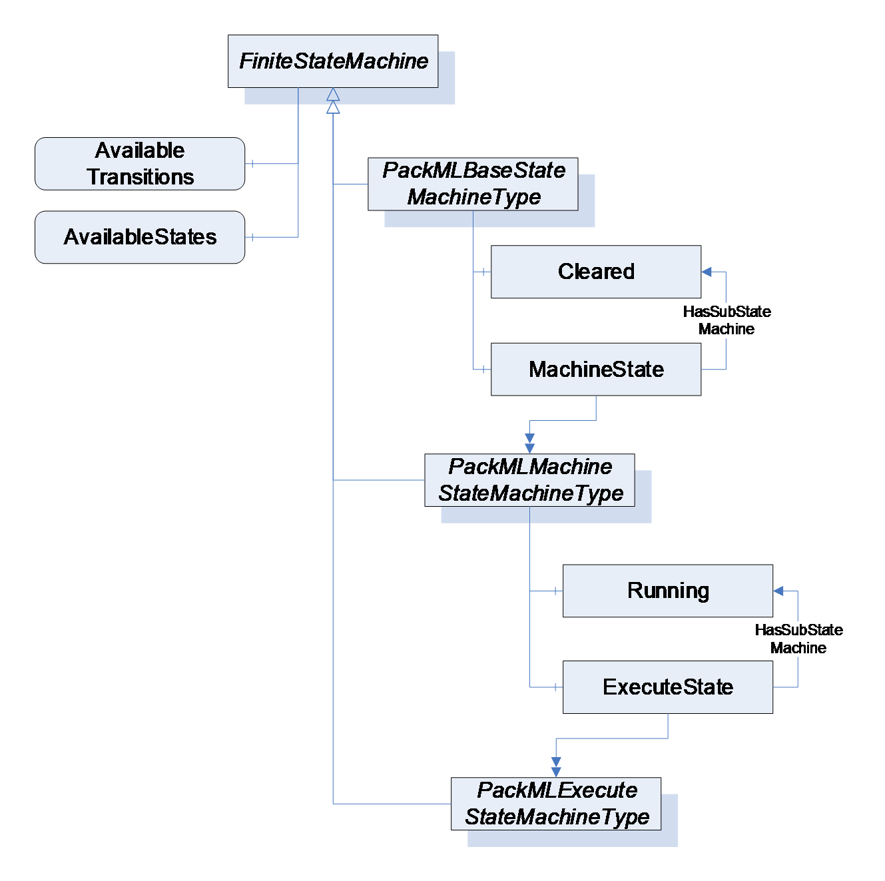
A key point in PackML StateMachines is that all of the StateMachines *defined in PackML shall require that the optional *AvailableTransitions and AvailableStates component of the FiniteStateMachineType be provided on all instance of the StateMachine. This allows Clients to understand the available States and Transitions for the given instance of the StateMachine. A StateMachine may restrict the States and Transition that are currently available. The following figure provides an overview of the PackML States. The Stopped State is commonly the initial sub-state that will be the starting point for the Cleared parent state. The Running State commonly will use the Resetting State as the initial state, but not all instance of the Running State sub-state model will include Resetting, so no initial state is defined for the Running State. The proposed valid initial States for this model are the Idle or Resetting States. This is Server dependant. The initial state for the system is Aborted. Alternative it could be Cleared as parent state with the proposal of Stopped as initial sub state. Figure 15 provide an overview of the states and transitions in the StateMachine. *The model refers to the PackML state model Version 2015. The dashed lines for the Hold transitions are optional extensions of the state model
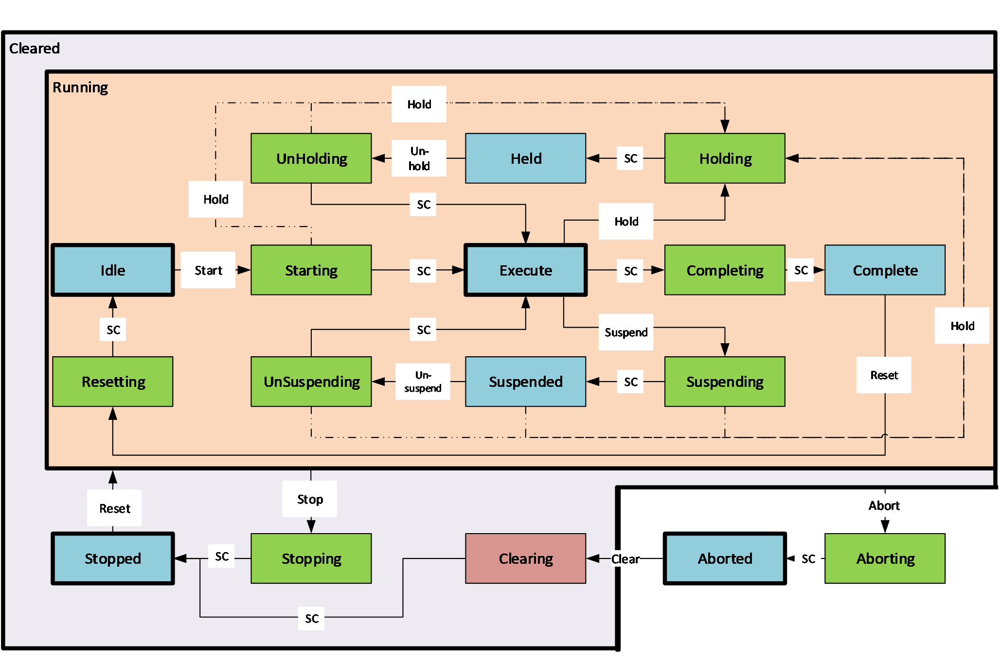
6.3.6 PackMLBaseStateMachineType📝
The PackMLBaseStateMachineType is the top level StateMachine for PackML. It is illustrated in Figure 16. The TR-88 specification does not define an initial State for this StateMachine, but typically the state machine uses either the Aborted or Stopped State as an initial State. Annex A provide recommended display names for the various states.
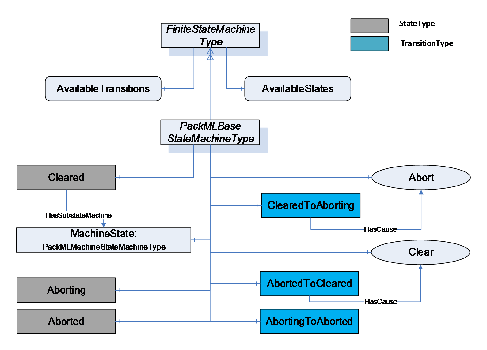
The PackMLBaseStateMachineType defines the available states in a PackML system. The type is defined in Table 6.* StateTypes* and TransitionTypes only exist in the type system, thus they do not have a modelling rule.
| Attribute | Value | ||||
|---|---|---|---|---|---|
| BrowseName | PackMLBaseStateMachineType | ||||
| IsAbstract | False | ||||
| References | Node Class | BrowseName | DataType | TypeDefinition | ModellingRule |
| Subtype of the FiniteStateMachineType defined in OPC 10000-5 | |||||
| HasComponent | Variable | 0:AvailableTransitions | NodeId[] | BaseDataVariableType | Mandatory |
| HasComponent | Variable | 0:AvailableStates | NodeId[] | BaseDataVariableType | Mandatory |
| HasComponent | Object | Aborting | StateType | ||
| HasComponent | Object | Aborted | StateType | ||
| HasComponent | Object | Cleared | StateType | ||
| HasComponent | Object | MachineState | PackMLMachineStateMachineType | Mandatory | |
| HasComponent | Object | AbortedToCleared | TransitionType | ||
| HasComponent | Object | AbortingToAborted | TransitionType | ||
| HasComponent | Object | ClearedToAborting | TransitionType | ||
| HasComponent | Method | Abort | Defined in 6.7.5 | Optional | |
| HasComponent | Method | Clear | Defined in 6.7.6 | Optional | |
The AvailableTransitions and AvailableStates are optional variables in the FiniteStateMachine, but they are overridden in the PackMLBaseStateMachine and are made Mandatory. The PackMLBaseStateMachine does include a sub-state machine that provides sub-states for the Cleared State.
Aborting - The ABORTING state can be entered at any time in response to the Abort command or on the occurrence of a machine fault. The aborting logic will bring the machine to a rapid safe stop. Operation of the emergency stop will cause the machine to be tripped by its safety system. It will also provide a signal to initiate the ABORT State. The value of this StateType is 8.
Aborted - This state maintains machine status information relevant to the Abort condition. The machine can only exit the ABORTED state after an explicit Clear command, subsequently to manual intervention to correct and reset the detected machine faults. The value of this StateType is 9.
Cleared - this state exposes the MachineState sub StateMachine and state associated with this substate machine. The value of this StateType is 19.
MachineState - A PackMLMachineStateMachineType defined in section 6.3.7.
Abort - a Method to trigger a change of state to Aborting. This will affect all sub-states in cleared state. Defined in 6.7.5.
Clear - a Method to trigger a change of state to the Cleared. Defined in 6.7.6.
Table 7 defines the available Transitions in the PackMLBaseStateMachineType.
| Source Path | Reference Type | Is Forward | Target Path |
|---|---|---|---|
| ClearedToAborting | ToState | True | Aborting |
| FromState | True | Cleared | |
| HasCause | True | Abort | |
| AbortingToAborted | ToState | True | Aborted |
| FromState | True | Aborting | |
| AbortedToCleared | ToState | True | Cleared |
| FromState | True | Aborted | |
| HasCause | True | Clear |
6.3.7 PackMLMachineStateMachineType📝
The PackMLMachineStateMachineType defines the machine level state machine. It is illustrated in Figure 17.
The TR-88 specification does not define an initial State for this StateMachine, but typically the state machine uses Stopped State as an initial State. Annex A provides recommended display names for the various states.
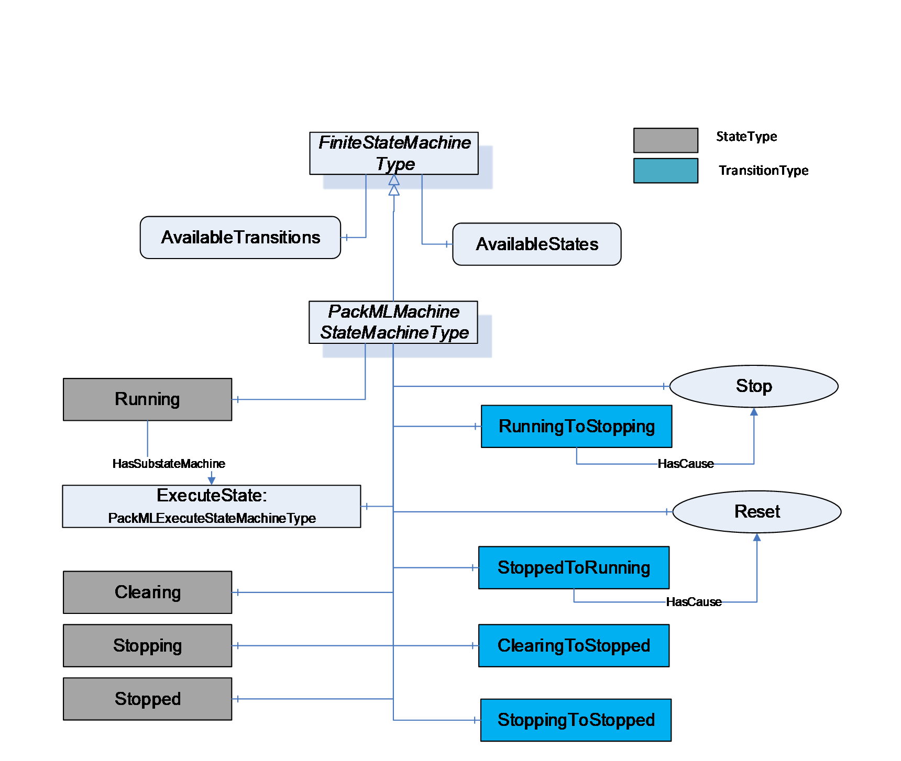
Table 8 defines the PackMLMachineStateMachineType. StateTypes and TransitionTypes only exist in the type system, thus they do not have a modelling rule.
| Attribute | Value | ||||
|---|---|---|---|---|---|
| BrowseName | PackMLMachineStateMachineType | ||||
| IsAbstract | False | ||||
| Reference | Node Class | BrowseName | DataType | TypeDefinition | ModellingRule |
| Subtype of the FiniteStateMachineType from OPC 10000-5. | |||||
| HasComponent | Variable | 0:AvailableTransitions | NodeId[] | BaseDataVariableType | Mandatory |
| HasComponent | Variable | 0:AvailableStates | NodeId[] | BaseDataVariableType | Mandatory |
| HasComponent | Object | Stopped | StateType | ||
| HasComponent | Object | Stopping | StateType | ||
| HasComponent | Object | Clearing | StateType | ||
| HasComponent | Object | Running | StateType | ||
| HasComponent | Object | ExecuteState | PackMLExecuteStateMachineType | Mandatory | |
| HasComponent | Object | StoppingToStopped | TransitionType | ||
| HasComponent | Object | ClearingToStopped | TransitionType | ||
| HasComponent | Object | StoppedToRunning | TransitionType | ||
| HasComponent | Object | RunningToStopping | TransitionType | ||
| HasComponent | Method | Stop | Defined in 6.7.7 | Optional | |
| HasComponent | Method | Reset | Defined in 6.7.8 | Optional | |
The AvailableTransitions and AvailableStates are optional variables in the FiniteStateMachine, but they are overridden in the PackMLMachineStateMachineType and are made Mandatory. The PackMLMachineStateMachineType does include a sub-state machine that provides sub-states for the Run State.
Stopped - The machine is powered and stationary after completing the STOPPING state. All communications with other systems are functioning (if applicable). The value of this StateType is 2
Stopping - This state executes the logic which brings the machine to a controlled stop as reflected by the STOPPED state. The value of this StateType is 7.
Clearing - Initiated by a state command to clear faults that may have occurred when ABORTING, and are present in the ABORTED state. The value of this StateType is 1.
Running - the State that allows the ExecuteState machine to become active, enabling sub-states provided by this StateMachine. The value of this StateType is 18.
ExecuteState - StateMachine that provides additional sub states.
Stop - A Method to trigger a change of state to Stopping. This will affect all sub-states in Run state. Defined in 6.7.7
Reset - A Method to trigger a change of state to Running, *enabling all of the sub-states of *Running and the respective Methods that they expose. Defined in 6.7.8
The transitions are defined in Table 9.
| Source Path | Reference Type | Is Forward | Target Path |
|---|---|---|---|
| StoppedToRunning | FromState | True | Stopped |
| ToState | True | Running | |
| HasCause | True | Reset | |
| StoppingToStopped | FromState | True | Stopping |
| ToState | True | Stopped | |
| ClearingToStopped | FromState | True | Clearing |
| ToState | True | Stopped | |
| RunningToStopping | FromState | True | Running |
| ToState | True | Stopping | |
| HasCause | True | Stop |
6.3.8 PackMLExecuteStateMachineType📝
The PackMLExecuteStateMachineType provides all of the base states defined in PackML. It is illustrated in Figure 18. The TR-88 specification does not define an initial State for this StateMachine, but typically the state machine use either the Idle or Resetting State as an initial State. Annex A provide recommended display names for the various states.
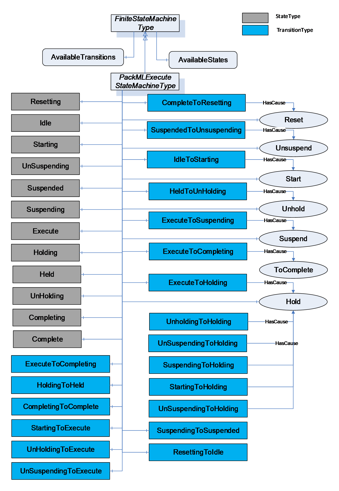
The PackMLExecuteStateMachineType is defined in Table 10. StateTypes and TransitionTypes only exist in the type system, thus they do not have a modelling rule.
| Attribute | Value | ||||
|---|---|---|---|---|---|
| BrowseName | PackMLExecuteStateMachineType | ||||
| IsAbstract | False | ||||
| References | NodeClass | BrowseName | DataType | TypeDefinition | Modelling Rule |
| Subtype of the FiniteStateMachineType defined in OPC 10000-5 | |||||
| HasComponent | Variable | 0:AvailableTransitions | NodeId[] | BaseDataVariableType | Mandatory |
| HasComponent | Variable | 0:AvailableStates | NodeId[] | BaseDataVariableType | Mandatory |
| HasComponent | Object | Resetting | StateType | ||
| HasComponent | Object | Idle | StateType | ||
| HasComponent | Object | Starting | StateType | ||
| HasComponent | Object | Suspending | StateType | ||
| HasComponent | Object | Suspended | StateType | ||
| HasComponent | Object | Unsuspending | StateType | ||
| HasComponent | Object | Holding | StateType | ||
| HasComponent | Object | Held | StateType | ||
| HasComponent | Object | Unholding | StateType | ||
| HasComponent | Object | Execute | StateType | ||
| HasComponent | Object | Completing | StateType | ||
| HasComponent | Object | Complete | StateType | ||
| HasComponent | Object | ResettingToIdle | TransitionType | ||
| HasComponent | Object | IdleToStarting | TransitionType | ||
| HasComponent | Object | StartingToExecute | TransitionType | ||
| HasComponent | Object | ExecuteToSuspending | TransitionType | ||
| HasComponent | Object | SuspendingToSuspended | TransitionType | ||
| HasComponent | Object | SuspendedToUnsuspending | TransitionType | ||
| HasComponent | Object | UnsuspendingToExecute | TransitionType | ||
| HasComponent | Object | ExecuteToHolding | TransitionType | ||
| HasComponent | Object | HoldingToHeld | TransitionType | ||
| HasComponent | Object | HeldToUnholding | TransitionType | ||
| HasComponent | Object | UnholdingToExecute | TransitionType | ||
| HasComponent | Object | ExecuteToCompleting | TransitionType | ||
| HasComponent | Object | CompletingToComplete | TransitionType | ||
| HasComponent | Object | CompleteToResetting | TransitionType | ||
| HasComponent | Object | StartingToHolding | TransitionType | ||
| HasComponent | Object | UnsuspendingToHolding | TransitionType | ||
| HasComponent | Object | SuspendedToHolding | TransitionType | ||
| HasComponent | Object | SuspendingToHolding | TransitionType | ||
| HasComponent | Object | UnholdingToHolding | TransitionType | ||
| HasComponent | Method | Reset | Defined in Clause 6.7.8 | Optional | |
| HasComponent | Method | ToComplete | Defined in Clause 6.7.9 | Optional | |
| HasComponent | Method | Start | Defined in Clause 6.7.10 | Optional | |
| HasComponent | Method | Unhold | Defined in Clause 6.7.11 | Optional | |
| HasComponent | Method | Suspend | Defined in Clause 6.7.12 | Optional | |
| HasComponent | Method | Hold | Defined in Clause 6.7.14 | Optional | |
| HasComponent | Method | Unsuspend | Defined in Clause 6.7.13 | Optional | |
Not all transitions defined in ANSI/ISA - TR88.00.02 - 2015. Following additional transitions in the object prepared for potential future extensions in TR88: StartingToHolding, UnsuspendingToHolding, SuspendedToHolding, SuspendingToHolding, UnholdingToHolding.
This FiniteStateMachine supports multiple Active states. It also supports 19 Transitions and a Method for transition between states.
Resetting: In response to a Reset command, the unit/machine will transition to Resetting from either Stopped or Complete. In this state the unit/machine attempts to clear any standing errors or stop causes. If successful, the unit/machine transitions to Idle. No hazardous motion should happen in this state. The value of this StateType is 15
Idle: The unit/machine is in an error-free state, waiting to start. The unit/machine transitions automatically to Idle after all steps necessary for Resetting have been completed. All conditions achieved during Resetting are maintained. A Start command will transition the unit/machine from Idle to Starting. *The value of this *StateType is 4.
Starting: The unit/machine completes all steps necessary to begin execution of the active machine mode. A Start command will cause the unit/machine to transition from Idle to Starting. The unit/machine will transition automatically from Starting to Execute once all required steps have been completed. The value of this StateType is 3.
Suspending: The unit/machine will transition from Execute to Suspending if conditions external to the unit/machine require a pause in production. Such conditions include faults to upstream or downstream equipment. The decision to Suspend may be made be a supervisory system monitoring the production line conditions or by unit/machine sensors detecting downstream blockages or upstream product scarcity. (In the former case, the unit/machine is 'blocked"; in the latter case, the unit/machine is "starved") After all steps required to suspend the machine have been completed, the unit/machine will automatically transition to Suspended state. The value of this StateType is 13.
Suspended: The unit/machine is paused, waiting for external process conditions to clear. In this state, the unit/machine shall not produce product, but may, if required, dry-cycle. Once external conditions have returned to normal, the unit/machine will transition to Unsuspending, typically without operator intervention. The value of this StateType is 5.
Unsuspending: After all external process conditions that caused the unit/machine to suspend have cleared, the unit/machine completes all steps required to resume execution of the active machine mode. Once all required actions to unsuspend the unit/machine have been completed, the unit/machine will automatically transition to Execute state. The value of this StateType is 14.
Holding: The unit/machine will transition from Execute to Holding if conditions internal to the unit/machine require a pause in production. Such conditions would include low levels on materials required for production or other minor issues requiring operator service, for example. The decision to hold may be made automatically by the unit/machine itself or by an operator. After all steps required to hold the machine have been completed, the unit/machine will transition automatically to Held state. The value of this StateType is 10.
Held: The unit/machine is paused, waiting for internal process conditions to clear. In this state, the unit/machine shall not produce product, though it may, if required, dry-cycle. A transition to Unholding will occur once internal machine conditions have cleared or if the Unhold command is initiated by an operator. The value of this StateType is 11.
Unholding: After all internal process conditions that caused the unit/machine to hold have cleared, the unit/machine completes all steps required to resume execution of the active machine mode. Once all required actions to unhold the machine have been completed, the unit/machine will transition automatically to Execute state. The value of this StateType is 12.
Execute: If the unit/machine is actively carrying out the behaviour or activity defined by the selected mode, then the machine is in Execute state. If the unit/machine is in production mode, for example, this means that the machine is producing product. The value of this StateType is 6.
Completing: Once the process associated with the current mode has reached a defined threshold (e.g. the required number of products for the current job have been produced), the unit/machine transitions from Execute to Completing. In this state all steps necessary to shut down the current process are carried out. The machine then transitions automatically to Complete state. The value of this StateType is 16.
Complete: Complete indicates the process associated with the active mode has come to its defined end. The unit/machine will wait in this state until a Reset command is issued (in which case it will transition to Resetting), or until the unit/machine is Stopped or Aborted. The value of this StateType is 17.
The Transitions are described in Table 11. This FiniteStateMachine also supports six Methods, for transitioning between states. This StateMachine includes transition to Holding from Unholding, Starting, Unsuspending, Suspended, Suspending, all of which are extension to the ISA-TR88.00.02-2022 specification.
| Source Path | Reference Type | Is Forward | Target Path |
|---|---|---|---|
| ResettingToIdle | FromState | True | Resetting |
| ToState | True | Idle | |
| IdleToStarting | FromState | True | Idle |
| ToState | True | Starting | |
| HasCause | True | Start | |
| StartingToExecute | FromState | True | Starting |
| ToState | True | Execute | |
| ExecuteToSuspending | FromState | True | Execute |
| ToState | True | Suspending | |
| HasCause | True | Suspend | |
| SuspendingToSuspended | FromState | True | Suspending |
| ToState | True | Suspended | |
| SuspendedToUnsuspending | FromState | True | Suspended |
| ToState | True | Unsuspending | |
| HasCause | True | Unsuspend | |
| UnsuspendingToExecute | FromState | True | Unsuspending |
| ToState | True | Execute | |
| ExecuteToHolding | FromState | True | Execute |
| ToState | True | Holding | |
| HasCause | True | Hold | |
| StartingToHolding | FromState | True | Starting |
| ToState | True | Holding | |
| HasCause | True | Hold | |
| SuspendingToHolding | FromState | True | Suspending |
| ToState | True | Holding | |
| HasCause | True | Hold | |
| SuspendedToHolding | FromState | True | Suspended |
| ToState | True | Holding | |
| HasCause | True | Hold | |
| UnsuspendingToHolding | FromState | True | Unsuspending |
| ToState | True | Holding | |
| HasCause | True | Hold | |
| UnholdingToHolding | FromState | True | Unholding |
| ToState | True | Holding | |
| HasCause | True | Hold | |
| HoldingToHeld | FromState | True | Holding |
| ToState | True | Held | |
| HeldToUnholding | FromState | True | Held |
| ToState | True | Unholding | |
| HasCause | True | Unhold | |
| UnholdingToExecute | FromState | True | Unholding |
| ToState | True | Execute | |
| ExecuteToCompleting | FromState | True | Execute |
| ToState | True | Completing | |
| HasCause | True | ToComplete | |
| CompletingToComplete | FromState | True | Completing |
| ToState | True | Complete | |
| CompleteToResetting | FromState | True | Complete |
| ToState | True | Resetting | |
| HasCause | True | Reset |
Not all transitions defined in ANSI/ISA - TR88.00.02 - 2015. Following additional transitions in the object prepared for potential future extensions in TR88: StartingToHolding, UnsuspendingToHolding, SuspendedToHolding, SuspendingToHolding, UnholdingToHolding.
6.4 Variables and VariableTypes📝
This section left blank.
6.5 DataTypes📝
6.5.1 Overview📝
This section defines any enumeration or structure that are defined as part of the PackML specification.
6.5.2 ProductionMaintenanceModeEnum📝
ProductionMaintenanceModeEnum describes the predefined modes. This is a default mode enumeration. A Server may define additional enumerations that describe the modes it supports, but any such enumeration must include "Production" as enumeration 1 and if Maintenance or Manual are included, they must be 2 and 3 respectively. Any additional modes must start at 4 or greater. If vendor specific or end user specific mode enumerations are included, they shall be defined as a subtype of this enumeration. ProductionMaintenanceModeEnum is the default enumeration that shall be used if no vendor or end user mode enumeration is defined. ProductionMaintenanceModeEnum is defined in Table 12.
| Name | Value | Description |
|---|---|---|
| Invalid | 0 | Not used |
| Production | 1 | Machine is in production mode |
| Maintenance | 2 | Machine is in maintenance mode |
| Manual | 3 | Machine is in manual mode |
where the following definitions apply:
-Production corresponds to the PackML Production Mode which is routine production.
-Maintenance corresponds to the PackML Maintenance Mode which is the ability to run a machine independent of other machine in a production line.
-Manual corresponds to the PackML Manual Mode which provides direct control of the individual machine elements.
6.5.3 PackMLCountDataType📝
The PackMLCountDataType is used to generate summary information about the system. The information depending on the use might be related to produced product, defective materials or any other information that needs to be tracked. It is formally defined in Table 13
| Name | Type | Description |
|---|---|---|
| PackMLCountDataType | Structure | |
| ID | Int32 | A user defined value that represents the consumed (processed or defective) material. Typically, this is an SKU number or a user material master number. |
| Name | String | The name is used to literally describe the material ID, and its associated material. |
| Unit | EUInformation | The unit tag is used to describe the names associated with a specific material used by the machine. |
| Count | Int32 | The amount of consumed (processed or defective) material on the current production job. |
| AccCount | Int32 | The cumulative count value of the material produced (or consumed). This counter gives the user a non-resetting counter that may be used for OEE calculations |
6.5.4 PackMLDescriptorDataType📝
The PackMLDescriptorDataType provides the PackML Parameter structure. The PackMLDescriptorDataType is formally defined in Table 14
| Name | Type | Description |
|---|---|---|
| PackMLDescriptorDataType | Structure | |
| ID | Int32 | A unique number assigned to the parameter. |
| Name | String | The name of the parameter |
| Unit | EUInformation | OPC UA engineering unit information |
| Value | Float | This is the numeric value of the parameter |
6.5.5 PackMLIngredientsDataType📝
The PackMLIngredientsDataType provides the PackML Parameter structure. The PackMLIngredientsDataType is formally defined in Table 26.
| Name | Type | Description |
|---|---|---|
| PackMLIngredientsDataType | Structure | |
| IngredientID | Int32 | A unique number assigned to the ingredient. |
| Parameter | PackMLDescriptorDataType[] | The array of Parameter that correspond to the ingredient |
6.5.6 PackMLProductDataType📝
The PackMLProductDataType provides the PackML product information. The PackMLProductDataType is formally defined in Table 16.
| Name | Type | Description |
|---|---|---|
| PackMLProductDataType | Structure | |
| ProductID | Int32 | A unique number assigned to the product. |
| ProcessVariables | PackMLDescriptorDataType[] | The array of Process variables associated with this product |
| Ingredients | PackMLIngredientsDataType[] | The array of ingredients associated with this product. |
6.5.7 PackMLRemoteInterfaceDataType📝
The PackMLRemoteInterfaceDataType provides the PackML remote connection information. The PackMLRemoteInterfaceDataType is formally defined in Table 17.
| Name | Type | Description |
|---|---|---|
| PackMLRemoteInterfaceDataType | Structure | This datatype is used with the RemoteCommand Method defined in 6.7.15.. |
| Number | Int32 | This is the unique number for the downstream/upstream unit machine using a common tag structure as the unit machine. The number should correspond to a number on the communication network, such as network ID, or IP address identifier. This number corresponds to the "information sender" that is setting the command data in the RemoteInterface[#] structure of the unit machine. |
| ControlCmdNumber | Int32 | A user defined command number associated with coded value from a remote unit. This number is a coded value sent from one node on the network to another. The value can be associated with a unit mode change request, speed change request, a state change request, etc. |
| CmdValue | Int32 | This is the command value associated with the ControlCmdNumber above. The command value may be the speed requested, state change, etc. Example:For an upstream machine designated as #2 a control command number of 5 may be related to the speed setting value for the machine. A value of 400 can be used to modify the remote machine setpoint. Command.RemoteInterface[1].Number = 2 Command.RemoteInterface[1] ControlCmdNumber = 5 Command.RemoteInterface[1].CmdValue = 400 |
| Parameter | PackMLDescriptorDataType[] | The parameter tags associated to commanded remote interface are typically used for command parameters that are given to the unit machine from remote machines. The parameters are typically needed for coordinating the unit machine or production with other machines. The parameter value may be anything from machine limit parameters to temperatures and counter presets. The parameters are typically limited to machine parameters as product and process parameters are described in later tags. |
6.5.8 PackMLParameterRealDataType📝
PackMLParameterRealDataType provides the PackML PARAMETER_REAL structure where member Value has IEC data type REAL. PackMLParameterRealDataType is formally defined in Table 18.
| Name | Type | Description |
|---|---|---|
| PackMLParameterRealDataType | Structure | |
| ID | Int32 | A unique number assigned to the parameter |
| Name | String | The name of the parameter |
| Unit | EUInformation | OPC UA engineering unit information |
| Value | Float | This is the numeric value of the parameter |
6.5.9 PackMLParameterStringDataType📝
PackMLParameterStringDataType provides the PackML PARAMETER_STRING structure where member Value has IEC data type STRING. PackMLParameterStringDataType is formally defined in Table 19.
| Name | Type | Description |
|---|---|---|
| PackMLParameterStringDataType | Structure | |
| ID | Int32 | A unique number assigned to the parameter. |
| Name | String | The name of the parameter |
| Unit | EUInformation | OPC UA engineering unit information |
| Value | String | This is the string value of the parameter |
6.5.10 PackMLParameterLRealDataType📝
PackMLParameterLRealDataType provides the PackML PARAMETER_LREAL structure where member Value has IEC data type LREAL. PackMLParameterLRealDataType is formally defined in Table 20.
| Name | Type | Description |
|---|---|---|
| PackMLParameterLRealDataType | Structure | |
| ID | Int32 | A unique number assigned to the parameter. |
| Name | String | The name of the parameter |
| Unit | EUInformation | OPC UA engineering unit information |
| Value | Double | This is the numeric value of the parameter |
6.5.11 PackMLParameterDIntDataType📝
PackMLParameterDIntDataType provides the PackML PARAMETER_DINT structure where member Value has IEC data type DINT. PackMLParameterDIntDataType is formally defined in Table 21.
| Name | Type | Description |
|---|---|---|
| PackMLParameterDintDataType | Structure | |
| ID | Int32 | A unique number assigned to the parameter. |
| Name | String | The name of the parameter |
| Unit | EUInformation | OPC UA engineering unit information |
| Value | Int32 | This is the numeric value of the parameter |
6.5.12 PackMLRecipeDataType📝
PackMLRecipeDataType provides the PackML RECIPE structure used to describe the product that the machine is making or can make. PackMLRecipeDataType is formally defined in Table 22.
| Name | Type | Description |
|---|---|---|
| PackMLRecipeDataType | Structure | |
| ID | Int32 | A unique number assigned to the recipe |
| Name | String | The name of the recipe |
| Unit | EUInformation | OPC UA engineering unit information |
| PrimaryQty | Float | Primary quantity value of the recipe |
| ProcessVariables | PackMLProcessVariablesDataType | Recipe process variables |
| Ingredients | PackMLIngredients | Recipe ingredients |
6.5.13 PackMLCumulativeTimesDataType📝
PackMLCumulativeTimesDataType provides the PackML CUMULATIVE_TIMES structure used to track the total amount of cumulative time a machine unit has spent in each Mode and State.This data type is used inside the PMLa structure as an array. The user is able to decide the extent of the array depending on the strategy for resetting times. PackMLCumulativeTimesDataType is formally defined in Table 23.
| Name | Type | Description |
|---|---|---|
| PackMLCumulativeTimesDataType | Structure | |
| AccTimeSinceRecet | Int32 | Accumulated time since last reset |
| ModeStateTimes | PackMLModeStateTimesDataType[] | Structured array of mode and state time values for each cumulative time tracker |
6.5.14 PackMLModeStateTimesDataType📝
PackMLModeStateTimesDataType provides the PackML MODESTATE_TIMES structure used to track the total amount of cumulative time a machine unit has spent in each mode and state. PackMLModeStateTimesDataType is formally defined in Table 24.
| Name | Type | Description |
|---|---|---|
| PackMLModeStateTimesDataType | Structure | |
| Mode | Int32 | Mode time values for each mode |
| State | Int32[] | State time values for each state in each mode |
6.5.15 PackMLProcessVariablesDataType📝
PackMLProcessVariablesDataType provides the PackML PROCESS_VARIABLES structure used to describe the key process variables for a given recipe, such as speed or time setpoints. PackMLProcessVariablesDataType is formally defined in Table 25.
| Name | Type | Description |
|---|---|---|
| PackMLProcessVariablesDataType | Structure | |
| Parameter_REAL | PackMLParameterRealDataType[] | Structured array of recipe process Variable information for values with Float data type |
| Parameter_STRING | PackMLParameterStringDataType[] | Structured array of recipe process Variable information for values with String data type |
| Parameter_LREAL | PackMLParameterLrealDataType[] | Structured array of recipe process Variable information for values with Double data type |
| Parameter_DINT | PackMLParameterDintDataType[] | Structured array of recipe process Variable information for values with Int32 data type |
6.5.16 PackMLIngredientsDataType📝
PackMLIngredientsDataType provides the PackML INGREDENTS structure used to describe the raw materials that are needed for a given recipe. PackMLProcessVariablesDataType is formally defined in Table 26.
| Name | Type | Description |
|---|---|---|
| PackMLIngredientsDataType | Structure | |
| Parameter_REAL | PackMLParameterRealDataType[] | Structured array of ingredient information for values with Float data type |
| Parameter_STRING | PackMLParameterStringDataType[] | Structured array of ingredient information for values with String data type |
| Parameter_LREAL | PackMLParameterLrealDataType[] | Structured array of ingredient information for values with Double data type |
| Parameter_DINT | PackMLParameterDintDataType[] | Structured array of ingredient information for values with Int32 data type |
6.5.17 PackMLEquipmentInterlockDataType📝
PackMLEquipmentInterlockDataType provides the PackML EQUIPMENT_INTERLOCK structure used to provide an indicator of Blocked or Starved conditions at the machine unit when integrated into a complete production line. PackMLEquipmentInterlockDataType is formally defined in Table 27.
| Name | Type | Description |
|---|---|---|
| PackMLEquipmentInterlockDataType | Structure | |
| Blocked | Boolean | Indicator for unit/machine blocked |
| Starved | Boolean | Indicator for unit/machine starved |
6.6 ReferenceTypes📝
6.6.1 HasInterlock📝
This reference type is used to point to an Interlock. It is defined in Table 28
| Attributes | Value | ||
|---|---|---|---|
| BrowseName | HasInterlock | ||
| InverseName | InterlockFor | ||
| Symmetric | False | ||
| IsAbstract | False | ||
| References | NodeClass | BrowseName | Comment |
| Subtype of HasComponent defined in OPC 10000-5 | |||
6.6.2 HasAlarm📝
This reference type is used to point to an Alarm. It is defined in Table 29.
| Attributes | Value | ||
|---|---|---|---|
| BrowseName | HasAlarm | ||
| InverseName | AlarmFor | ||
| Symmetric | False | ||
| IsAbstract | False | ||
| References | NodeClass | BrowseName | Comment |
| Subtype of HasComponent defined in OPC 10000-5 | |||
6.6.3 HasAlarmHistory📝
This reference type is used to point to an Alarm History. It is defined in Table 30
| Attributes | Value | ||
|---|---|---|---|
| BrowseName | HasAlarmHistory | ||
| InverseName | AlarmHistoryFor | ||
| Symmetric | False | ||
| IsAbstract | False | ||
| References | NodeClass | BrowseName | Comment |
| Subtype of HasComponent defined in OPC 10000-5 | |||
6.6.4 HasWarning📝
This reference type is used to point to a Warning. It is defined in Table 31.
| Attributes | Value | ||
|---|---|---|---|
| BrowseName | HasWarning | ||
| InverseName | WarningFor | ||
| Symmetric | False | ||
| IsAbstract | False | ||
| References | NodeClass | BrowseName | Comment |
| Subtype of HasComponent defined in OPC 10000-5 | |||
6.6.5 HasStopReason📝
This reference type is used to point to a StopReason. It is defined in Table 32.
| Attributes | Value | ||
|---|---|---|---|
| BrowseName | HasStopReason | ||
| InverseName | StopReasonFor | ||
| Symmetric | False | ||
| IsAbstract | False | ||
| References | NodeClass | BrowseName | Comment |
| Subtype of HasComponent defined in OPC 10000-5 | |||
6.7 Methods📝
6.7.1 Overview📝
This section provides definition of the method used in this specification. These methods are referenced from more than one location or are part of more than one object in some cases. The functionality for the method is the same for all objects
6.7.2 SetUnitMode Method📝
This Method allows an OPC UA Client to change the mode of the unit. Parameters are defined in Table 33
Signature
SetUnitMode(
[in] Int32 RequestedMode
);| Argument | Description |
|---|---|
| RequestedMode | The requested mode from the list of available modes in the enumeration from NodeID "UnitSupportedModes" in PackMLStatusObjectType |
Method result codes are defined in Table 34
| Result Code | Description |
|---|---|
| Bad_MethodInvalid | See OPC 10000-4 - Services for the description of this result code. (The Method id does not refer to a Method for the specified Object.) |
| Bad_NotImplemented | See OPC 10000-4 - Services for the description of this result code. (Requested operation is not implemented.) |
| Bad_NodeIdUnknown | See OPC 10000-4 - Services for the description of this result code. (Used to indicate that the specified Object is not valid) |
| Bad_InvalidState | See OPC 10000-4 - Services for the description of this result code. (The operation cannot be completed because the Object is closed, uninitialized or in some other invalid state.) |
| Bad_ArgumentsMissing | See OPC 10000-4 - Services for the description of this result code (The Client did not specify all of the input arguments for the Method.) |
| Bad_TooManyArguments | See OPC 10000-4 - Services for the description of this result code (The Client specified more input arguments than defined for the Method.) |
| Bad_InvalidArgument | See OPC 10000-4 - Services for the description of this result code. (Used to indicate in the operation level results that one or more of the input arguments are invalid. The inputArgumentResults contain the specific status code for each invalid argument.) |
| Bad_TypeMismatch | See OPC 10000-4 - Services for the description of this result code. (Used to indicate that an input argument does not have the correct data type.) |
Table 35 specifies the AddressSpace representation for the SetUnitMode Method. SetUnitMode includes an InputArgument, where the input argument details are provided in Table 33.
| Attribute | Value | ||||
|---|---|---|---|---|---|
| BrowseName | SetUnitMode | ||||
| References | NodeClass | BrowseName | DataType | TypeDefinition | ModellingRule |
| HasProperty | Variable | InputArguments | Argument[] | PropertyType | Mandatory |
6.7.3 SetMachSpeed Method📝
This Method allows an OPC UA Client to change the speed of the machine or unit. Parameters are defined in Table 36
Signature
SetMachSpeed(
[in] Float RequestedMachineSpeed
);| Argument | Description |
|---|---|
| RequestedMachineSpeed | The target machine speed |
Method result codes are defined in Table 37
| Result Code | Description |
|---|---|
| Bad_MethodInvalid | See OPC 10000-4 - Services for the description of this result code. (The Method id does not refer to a Method for the specified Object.) |
| Bad_NotImplemented | See OPC 10000-4 - Services for the description of this result code. (Requested operation is not implemented.) |
| Bad_NodeIdUnknown | See OPC 10000-4 - Services for the description of this result code. (Used to indicate that the specified Object is not valid) |
| Bad_InvalidState | See OPC 10000-4 - Services for the description of this result code. (The operation cannot be completed because the Object is closed, uninitialized or in some other invalid state.) |
| Bad_ArgumentsMissing | See OPC 10000-4 - Services for the description of this result code (The Client did not specify all of the input arguments for the Method.) |
| Bad_TooManyArguments | See OPC 10000-4 - Services for the description of this result code (The Client specified more input arguments than defined for the Method.) |
| Bad_InvalidArgument | See OPC 10000-4 - Services for the description of this result code. (Used to indicate in the operation level results that one or more of the input arguments are invalid. The inputArgumentResults contain the specific status code for each invalid argument.) |
| Bad_TypeMismatch | See OPC 10000-4 - Services for the description of this result code. (Used to indicate that an input argument does not have the correct data type.) |
Table 38 specifies the AddressSpace representation for the SetMachSpeed Method. SetMachSpeed includes an array of InputArguments, where the input argument details are provided in Table 36.
| Attribute | Value | ||||
|---|---|---|---|---|---|
| BrowseName | SetMachSpeed | ||||
| References | NodeClass | BrowseName | DataType | TypeDefinition | ModellingRule |
| HasProperty | Variable | InputArguments | Argument[] | PropertyType | Mandatory |
6.7.4 SetProduct Method📝
This Method allows an OPC UA Client to change product associated with this PackML system. Parameters are defined in Table 39.
Signature
SetProduct(
[in] PackMLProductDataType[] Product
);| Argument | Description |
|---|---|
| Product | This structure is an array of product definition, which includes the ProductId, ProcessVariables array and Ingredients array. See 6.5.6 for a definition of the DataType. |
Method result codes are defined in Table 40
| Result Code | Description |
|---|---|
| Bad_MethodInvalid | See OPC 10000-4 - Services for the description of this result code. (The Method id does not refer to a Method for the specified Object.) |
| Bad_NotImplemented | See OPC 10000-4 - Services for the description of this result code. (Requested operation is not implemented.) |
| Bad_NodeIdUnknown | See OPC 10000-4 - Services for the description of this result code. (Used to indicate that the specified Object is not valid) |
| Bad_InvalidState | See OPC 10000-4 - Services for the description of this result code. (The operation cannot be completed because the Object is closed, uninitialized or in some other invalid state.) |
| Bad_ArgumentsMissing | See OPC 10000-4 - Services for the description of this result code (The Client did not specify all of the input arguments for the Method.) |
| Bad_TooManyArguments | See OPC 10000-4 - Services for the description of this result code (The Client specified more input arguments than defined for the Method.) |
| Bad_InvalidArgument | See OPC 10000-4 - Services for the description of this result code. (Used to indicate in the operation level results that one or more of the input arguments are invalid. The inputArgumentResults contain the specific status code for each invalid argument.) |
| Bad_TypeMismatch | See OPC 10000-4 - Services for the description of this result code. (Used to indicate that an input argument does not have the correct data type.) |
Table 41 specifies the AddressSpace representation for the SetProduct Method. SetProduct includes an array of InputArguments, where the input argument details are provided in Table 39.
| Attribute | Value | ||||
|---|---|---|---|---|---|
| BrowseName | SetProduct | ||||
| References | NodeClass | BrowseName | DataType | TypeDefinition | ModellingRule |
| HasProperty | Variable | InputArguments | Argument[] | PropertyType | Mandatory |
6.7.5 Abort Method📝
This Method is used as part of the PackMLBaseStateMachineType. It allows an OPC UA Client to change the state of this state machine to the Aborting state.
Signature
Abort(
);Method result codes are defined in Table 42.
| Result Code | Description |
|---|---|
| Bad_MethodInvalid | See OPC 10000-4 - Services for the description of this result code. (The Method id does not refer to a Method for the specified Object.) |
| Bad_NotImplemented | See OPC 10000-4 - Services for the description of this result code. (Requested operation is not implemented.) |
| Bad_NodeIdUnknown | See OPC 10000-4 - Services for the description of this result code. (Used to indicate that the specified Object is not valid) |
| Bad_InvalidState | See OPC 10000-4 - Services for the description of this result code. (The operation cannot be completed because the Object is closed, uninitialized or in some other invalid state.) |
Table 43 specifies the AddressSpace representation for the Abort Method. Abort has no input or output parameters and has no referenced objects or variables.
| Attribute | Value | ||||
|---|---|---|---|---|---|
| BrowseName | Abort | ||||
| References | NodeClass | BrowseName | DataType | TypeDefinition | ModellingRule |
6.7.6 Clear Method📝
This Method is used as part of the PackMLBaseStateMachineType. It allows an OPC UA Client to change the state of this state machine to the Cleared state.
Signature
Clear(
);Method result codes are defined in Table 44.
| Result Code | Description |
|---|---|
| Bad_MethodInvalid | See OPC 10000-4 - Services for the description of this result code. (The Method id does not refer to a Method for the specified Object.) |
| Bad_NotImplemented | See OPC 10000-4 - Services for the description of this result code. (Requested operation is not implemented.) |
| Bad_NodeIdUnknown | See OPC 10000-4 - Services for the description of this result code. (Used to indicate that the specified Object is not valid) |
| Bad_InvalidState | See OPC 10000-4 - Services for the description of this result code. (The operation cannot be completed because the Object is closed, uninitialized or in some other invalid state.) |
Table 45 specifies the AddressSpace representation for the Clear Method. Clear has no input or output parameters and has no referenced objects or variables.
| Attribute | Value | ||||
|---|---|---|---|---|---|
| BrowseName | Clear | ||||
| References | NodeClass | BrowseName | DataType | TypeDefinition | ModellingRule |
6.7.7 Stop Method📝
This Method is used as part of the PackMLMachineStateMachineType. It allows an OPC UA Client to change the state of this state machine to the Stopping state.
Signature
Stop(
);Method result codes are defined in Table 46
| Result Code | Description |
|---|---|
| Bad_MethodInvalid | See OPC 10000-4 - Services for the description of this result code. (The Method id does not refer to a Method for the specified Object.) |
| Bad_NotImplemented | See OPC 10000-4 - Services for the description of this result code. (Requested operation is not implemented.) |
| Bad_NodeIdUnknown | See OPC 10000-4 - Services for the description of this result code. (Used to indicate that the specified Object is not valid) |
| Bad_InvalidState | See OPC 10000-4 - Services for the description of this result code. (The operation cannot be completed because the Object is closed, uninitialized or in some other invalid state.) |
Table 47 specifies the AddressSpace representation for the Stop Method. Stop has no input or output parameters and has no referenced objects or variables.
| Attribute | Value | ||||
|---|---|---|---|---|---|
| BrowseName | Stop | ||||
| References | NodeClass | BrowseName | DataType | TypeDefinition | ModellingRule |
6.7.8 Reset Method📝
This Method is used as part of the PackMLExecuteStateMachineType. It allows an OPC UA Client to change the state of this state machine to the Resetting state.
Signature
Reset(
);Method result codes are defined in Table 48.
| Result Code | Description |
|---|---|
| Bad_MethodInvalid | See OPC 10000-4 - Services for the description of this result code. (The Method id does not refer to a Method for the specified Object.) |
| Bad_NotImplemented | See OPC 10000-4 - Services for the description of this result code. (Requested operation is not implemented.) |
| Bad_NodeIdUnknown | See OPC 10000-4 - Services for the description of this result code. (Used to indicate that the specified Object is not valid) |
| Bad_InvalidState | See OPC 10000-4 - Services for the description of this result code. (The operation cannot be completed because the Object is closed, uninitialized or in some other invalid state.) |
Table 49 specifies the AddressSpace representation for the Reset Method. Reset has no input or output parameters and has no referenced Objects or Variables.
| Attribute | Value | ||||
|---|---|---|---|---|---|
| BrowseName | Reset | ||||
| References | NodeClass | BrowseName | DataType | TypeDefinition | ModellingRule |
6.7.9 ToComplete Method📝
This Method is used as part of the PackMLExecuteStateMachineType. It allows an OPC UA Client to change the state of this state machine to the Complete state.
Signature
ToComplete(
);Method result codes are defined in Table 50.
| Result Code | Description |
|---|---|
| Bad_MethodInvalid | See OPC 10000-4 - Services for the description of this result code. (The Method id does not refer to a Method for the specified Object.) |
| Bad_NotImplemented | See OPC 10000-4 - Services for the description of this result code. (Requested operation is not implemented.) |
| Bad_NodeIdUnknown | See OPC 10000-4 - Services for the description of this result code. (Used to indicate that the specified Object is not valid) |
| Bad_InvalidState | See OPC 10000-4 - Services for the description of this result code. (The operation cannot be completed because the Object is closed, uninitialized or in some other invalid state.) |
Table 51 specifies the AddressSpace representation for the ToComplete Method. ToComplete has no input or output parameters and has no referenced objects or variables.
| Attribute | Value | ||||
|---|---|---|---|---|---|
| BrowseName | ToComplete | ||||
| References | NodeClass | BrowseName | DataType | TypeDefinition | ModellingRule |
6.7.10 Start Method📝
This Method is used as part of the PackMLExecuteStateMachineType. It allows an OPC UA Client to change the state of this state machine to the Starting State and send parameters at the same time. Which is an extension to the ISA-TR88.00.02-2022 specification. The parameter is defined in Table 52
Signature
Start(
[in] PackMLDescriptorDataType[] Parameter
); | Argument | Description |
|---|---|
| Parameter | The array of parameter with Id, Name, Unit and Value can be used by the method. See 6.5.4 for the definition of the DataType. |
Method result codes are defined in Table 53.
| Result Code | Description |
|---|---|
| Bad_MethodInvalid | See OPC 10000-4 - Services for the description of this result code. (The Method id does not refer to a Method for the specified Object.) |
| Bad_NotImplemented | See OPC 10000-4 - Services for the description of this result code. (Requested operation is not implemented.) |
| Bad_NodeIdUnknown | See OPC 10000-4 - Services for the description of this result code. (Used to indicate that the specified Object is not valid) |
| Bad_InvalidState | See OPC 10000-4 - Services for the description of this result code. (The operation cannot be completed because the Object is closed, uninitialized or in some other invalid state.) |
| Bad_ArgumentsMissing | See OPC 10000-4 - Services for the description of this result code (The Client did not specify all of the input arguments for the Method.) |
| Bad_TooManyArguments | See OPC 10000-4 - Services for the description of this result code (The Client specified more input arguments than defined for the Method.) |
| Bad_InvalidArgument | See OPC 10000-4 - Services for the description of this result code. (Used to indicate in the operation level results that one or more of the input arguments are invalid. The inputArgumentResults contain the specific status code for each invalid argument.) |
| Bad_TypeMismatch | See OPC 10000-4 - Services for the description of this result code. (Used to indicate that an input argument does not have the correct data type.) |
Table 54 specifies the AddressSpace representation for the Start Method. Start includes an array of InputArguments, where the input argument details are provided in Table 52.
| Attribute | Value | ||||
|---|---|---|---|---|---|
| BrowseName | Start | ||||
| References | NodeClass | BrowseName | DataType | TypeDefinition | ModellingRule |
| HasProperty | Variable | InputArguments | Argument[] | PropertyType | Mandatory |
6.7.11 Unhold Method📝
This Method is used as part of the PackMLExecuteStateMachineType. It allows an OPC UA Client to change the state of this state machine to the Unholding state.
Signature
Unhold(
);Method result codes are defined in Table 55
| Result Code | Description |
|---|---|
| Bad_MethodInvalid | See OPC 10000-4 - Services for the description of this result code. (The Method id does not refer to a Method for the specified Object.) |
| Bad_NotImplemented | See OPC 10000-4 - Services for the description of this result code. (Requested operation is not implemented.) |
| Bad_NodeIdUnknown | See OPC 10000-4 - Services for the description of this result code. (Used to indicate that the specified Object is not valid) |
| Bad_InvalidState | See OPC 10000-4 - Services for the description of this result code. (The operation cannot be completed because the Object is closed, uninitialized or in some other invalid state.) |
Table 56 specifies the AddressSpace representation for the Unhold Method. Unhold has no input or output parameters and has no referenced objects or variables.
| Attribute | Value | ||||
|---|---|---|---|---|---|
| BrowseName | Unhold | ||||
| References | NodeClass | BrowseName | DataType | TypeDefinition | ModellingRule |
6.7.12 Suspend Method📝
This Method is used as part of the PackMLExecuteStateMachineType. It allows an OPC UA Client to change the state of this state machine to the Suspending *state.
Signature
Suspend(
);Method result codes are defined in Table 57
| Result Code | Description |
|---|---|
| Bad_MethodInvalid | See OPC 10000-4 - Services for the description of this result code. (The Method id does not refer to a Method for the specified Object.) |
| Bad_NotImplemented | See OPC 10000-4 - Services for the description of this result code. (Requested operation is not implemented.) |
| Bad_NodeIdUnknown | See OPC 10000-4 - Services for the description of this result code. (Used to indicate that the specified Object is not valid) |
| Bad_InvalidState | See OPC 10000-4 - Services for the description of this result code. (The operation cannot be completed because the Object is closed, uninitialized or in some other invalid state.) |
Table 58 specifies the AddressSpace representation for the Suspend Method. Suspend has no input or output parameters and has no referenced objects or variables.
| Attribute | Value | ||||
|---|---|---|---|---|---|
| BrowseName | Suspend | ||||
| References | NodeClass | BrowseName | DataType | TypeDefinition | ModellingRule |
6.7.13 Unsuspend Method📝
This Method is used as part of the PackMLExecuteStateMachineType. It allows an OPC UA Client to change the state of this state machine to the Unsuspending state.
Signature
Unsuspend(
);Method result codes are defined in Table 59
| Result Code | Description |
|---|---|
| Bad_MethodInvalid | See OPC 10000-4 - Services for the description of this result code. (The Method id does not refer to a Method for the specified Object.) |
| Bad_NotImplemented | See OPC 10000-4 - Services for the description of this result code. (Requested operation is not implemented.) |
| Bad_NodeIdUnknown | See OPC 10000-4 - Services for the description of this result code. (Used to indicate that the specified Object is not valid) |
| Bad_InvalidState | See OPC 10000-4 - Services for the description of this result code. (The operation cannot be completed because the Object is closed, uninitialized or in some other invalid state.) |
Table 60 specifies the AddressSpace representation for the Unsuspend Method. Unsuspend has no input or output parameters and has no referenced Objects or Variables.
| Attribute | Value | ||||
|---|---|---|---|---|---|
| BrowseName | Unsuspend | ||||
| References | NodeClass | BrowseName | DataType | TypeDefinition | ModellingRule |
6.7.14 Hold Method📝
This Method is used as part of the PackMLExecuteStateMachineType. It allows an OPC UA Client to change the state of this state machine to the Holding state.
Signature
Hold(
);Method result codes are defined in Table 61
| Result Code | Description |
|---|---|
| Bad_MethodInvalid | See OPC 10000-4 - Services for the description of this result code. (The Method id does not refer to a Method for the specified Object.) |
| Bad_NotImplemented | See OPC 10000-4 - Services for the description of this result code. (Requested operation is not implemented.) |
| Bad_NodeIdUnknown | See OPC 10000-4 - Services for the description of this result code. (Used to indicate that the specified Object is not valid) |
| Bad_InvalidState | See OPC 10000-4 - Services for the description of this result code. (The operation cannot be completed because the Object is closed, uninitialized or in some other invalid state.) |
Table 62 specifies the AddressSpace representation for the Hold Method. Hold has no input or output parameters and has no referenced objects or variables.
| Attribute | Value | ||||
|---|---|---|---|---|---|
| BrowseName | Hold | ||||
| References | NodeClass | BrowseName | DataType | TypeDefinition | ModellingRule |
6.7.15 RemoteCommand Method📝
This Method is used to issue a command to the UA Server that can then be passed on to any other internal system as illustrated in Figure 19 or it can be used to pass information on to an upstream or downstream system as illustrated in Figure 20. In both cases, it is up to the UA Server and/or the underlying system to determine when the command is passed on.
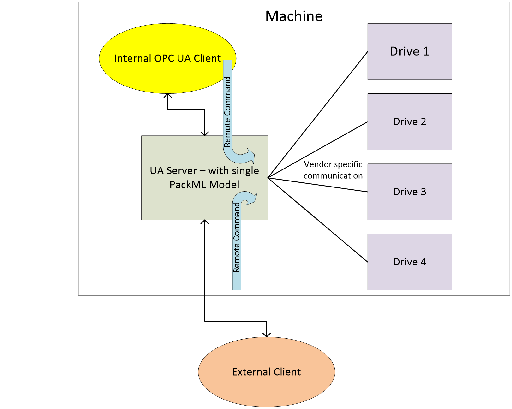
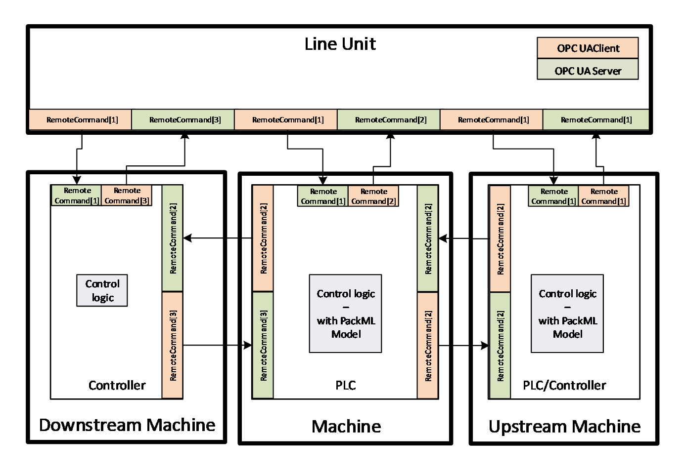
The RemoteCommand Method parameters are defined in Table 63
Signature
RemoteCommand(
[in] PackMLRemoteInterfaceDataType[] RemoteInterface
);| Argument | Description |
|---|---|
| RemoteInterface | This structure is an array of remote interface information which include Number, ControlCmdNumber, CmdValue and Parameter. Parameter itself is a structure formally defined in 6.5.4. The PackMLRemoteInterfaceDataType is formally defined in 6.5.7 |
Method result codes are defined in Table 64.
| Result Code | Description |
|---|---|
| Bad_MethodInvalid | See OPC 10000-4 - Services for the description of this result code. (The Method id does not refer to a Method for the specified Object.) |
| Bad_NotImplemented | See OPC 10000-4 - Services for the description of this result code. (Requested operation is not implemented.) |
| Bad_NodeIdUnknown | See OPC 10000-4 - Services for the description of this result code. (Used to indicate that the specified Object is not valid) |
| Bad_InvalidState | See OPC 10000-4 - Services for the description of this result code. (The operation cannot be completed because the Object is closed, uninitialized or in some other invalid state.) |
| Bad_MethodInvalid | See OPC 10000-4 - Services for the description of this result code. (The Method id does not refer to a Method for the specified Object.) |
| Bad_ArgumentsMissing | See OPC 10000-4 - Services for the description of this result code (The Client did not specify all of the input arguments for the Method.) |
| Bad_TooManyArguments | See OPC 10000-4 - Services for the description of this result code (The Client specified more input arguments than defined for the Method.) |
| Bad_InvalidArgument | See OPC 10000-4 - Services for the description of this result code. (Used to indicate in the operation level results that one or more of the input arguments are invalid. The inputArgumentResults contain the specific status code for each invalid argument.) |
| Bad_TypeMismatch | See OPC 10000-4 - Services for the description of this result code. (Used to indicate that an input argument does not have the correct data type.) |
Table 65 specifies the AddressSpace representation for the RemoteCommand Method. RemoteCommand includes an array of InputArguments, where the input argument details are provided in Table 63.
| Attribute | Value | ||||
|---|---|---|---|---|---|
| BrowseName | RemoteCommand | ||||
| References | NodeClass | BrowseName | DataType | TypeDefinition | ModellingRule |
| HasProperty | Variable | InputArguments | Argument[] | PropertyType | Mandatory |
6.7.16 SetInterlock Method📝
This Method allows an OPC UA Client to set an interlock associated with this PackML system parameter. The parameters for the SetInterlock Method are defined in Table 66.
Signature
SetInterlock(
[in] Int32 InterlockId,
[in] Boolean State
);| Argument | Description |
|---|---|
| InterlockId | ID of the target interlock to set or reset. The ID typically refer to the element in the Boolean Array in the MaterialInterlock tag. |
| State | The state that the targeted interlock should be set to. True is set to interlocked, false is not interlocked. |
Method result codes are defined in Table 67
| Result Code | Description |
|---|---|
| Bad_MethodInvalid | See OPC 10000-4 - Services for the description of this result code. (The Method id does not refer to a Method for the specified Object.) |
| Bad_NotImplemented | See OPC 10000-4 - Services for the description of this result code. (Requested operation is not implemented.) |
| Bad_NodeIdUnknown | See OPC 10000-4 - Services for the description of this result code. (Used to indicate that the specified Object is not valid) |
| Bad_InvalidState | See OPC 10000-4 - Services for the description of this result code. (The operation cannot be completed because the Object is closed, uninitialized or in some other invalid state.) |
| Bad_MethodInvalid | See OPC 10000-4 - Services for the description of this result code. (The Method id does not refer to a Method for the specified Object.) |
| Bad_ArgumentsMissing | See OPC 10000-4 - Services for the description of this result code (The Client did not specify all of the input arguments for the Method.) |
| Bad_TooManyArguments | See OPC 10000-4 - Services for the description of this result code (The Client specified more input arguments than defined for the Method.) |
| Bad_InvalidArgument | See OPC 10000-4 - Services for the description of this result code. (Used to indicate in the operation level results that one or more of the input arguments are invalid. The inputArgumentResults contain the specific status code for each invalid argument.) |
| Bad_TypeMismatch | See OPC 10000-4 - Services for the description of this result code. (Used to indicate that an input argument does not have the correct data type.) |
Table 68 specifies the AddressSpace representation for the SetInterlock Method. SetInterlock includes an array of InputArguments, where the input argument details are provided in Table 66.
| Attribute | Value | ||||
|---|---|---|---|---|---|
| BrowseName | SetInterlock | ||||
| References | NodeClass | BrowseName | DataType | TypeDefinition | ModellingRule |
| HasProperty | Variable | InputArguments | Argument[] | PropertyType | Mandatory |
6.7.17 SetParameter Method📝
This Method allows an OPC UA Client to set the parameters that are by the machine.
Signature
SetParameter(
[in] PackMLDescriptorDataType[] Parameter
);| Argument | Description |
|---|---|
| Parameter | The array of parameter that can be used by the method |
Method result codes are defined in Table 70
| Result Code | Description |
|---|---|
| Bad_MethodInvalid | See OPC 10000-4 - Services for the description of this result code. (The Method id does not refer to a Method for the specified Object.) |
| Bad_NotImplemented | See OPC 10000-4 - Services for the description of this result code. (Requested operation is not implemented.) |
| Bad_NodeIdUnknown | See OPC 10000-4 - Services for the description of this result code. (Used to indicate that the specified Object is not valid) |
| Bad_InvalidState | See OPC 10000-4 - Services for the description of this result code. (The operation cannot be completed because the Object is closed, uninitialized or in some other invalid state.). If a machine determines that it is not in a state that allows parameter changes this error is returned. |
| Bad_MethodInvalid | See OPC 10000-4 - Services for the description of this result code. (The Method id does not refer to a Method for the specified Object.) |
Table 71 specifies the AddressSpace representation for the SetParameter Method. SetParameter includes an array of InputArguments, where the input argument details are provided in Table 69.
| Attribute | Value | ||||
|---|---|---|---|---|---|
| BrowseName | SetParameter | ||||
| References | NodeClass | BrowseName | DataType | TypeDefinition | ModellingRule |
| HasProperty | Variable | InputArguments | Argument[] | PropertyType | Mandatory |
6.8 Alarms📝
6.8.1 Overview📝
The section defines alarms. Alarms in PackML are provided via a set of tags. Alarms in OPC UA are provided via events and a full alarming system. This is a preferred method for providing alarms, but it does require some additional overhead. To allow the PackML information model to be implemented in smaller devices it was decided to initially support the existing Tag based representation of Alarm information, and to add the OPC UA Event based definition of alarms in the next release. Servers shall be able to report alarms in both manners, and Clients can use the manner that is most appropriate for them. Some smaller device might find it easier to just access the tags for Alarm information, but display system or other HMIs would probably make use of the OPC UA Event based system for alarming.
6.8.2 Alarm Tags📝
6.8.2.1 Overview📝
The following VariableType is used to report alarms in the PackML unit. In addition, the data is also available as a structured datatype, which is much like an event.
6.8.2.2 PackMLEventDataType📝
The PackMLEventDataType provides the PackML tag alarm structure. It is formally defined in Table 72.
| Name | Type | Description |
|---|---|---|
| PackMLEventDataType | Structure | |
| ID | Int32 | A unique number assigned to each type of alarm, stop or warning. |
| Value | Int32 | An alarm, stop or warning message number associated to the ID to allow for user specific detail or to break down the Alarm.ID to greater detail |
| Message | String | The actual text of the alarm, stop or warning for those machines capable of providing string information |
| Category | Int32 | A user defined value which indicates what type of alarm, stop or warning has occurred. E.g. electrical, mechanical, process limit, … |
| DateTime | UtcTime | The date and time that the alarm, stop or warning occurred |
| AckDateTime | UtcTime | The date and time that the alarm, stop or warning was Acknowledged, |
| Trigger | Boolean | This variable is true when the alarm is active |
6.8.3 Alarm Events📝
[note: This section will be defined in a future release]
7 Profiles and Conformance Units📝
7.1 Conformance Units📝
Table 73 defines the Conformance Units for the OPC UA Information Model for PackML.
| Category | Title | Description |
|---|---|---|
| Server | PackML Base Functionality | The server supports the BaseObjectModel. This includes exposing all mandatory objects, variables and methods. |
| Server | PackML Base TagID | The Server supports the TagID Property |
| Server | PackML Base Version | The Server supports the Version property and DataType |
| Server | PackML Base Admin | The Server support all of the mandatory items in the PackMLAdminObjectType |
| Server | PackML Base Status | The Server support all of the mandatory items in the PackMLStatusObjectType |
| Server | PackML State Information | The server supports the BaseStateMachine. This include the list of AvailableStates and AvailableTransitions. It also includes all mandatory states and any method associated with the states. The certification will include a list of all states and transitions supported by the StateMachine. This include the mandatory Sub-statemachines |
| Server | PackML State Abort | The server supports the Abort Method |
| Server | PackML State Clear | The server supports the Clear Method |
| Server | PackML State Stop | The server supports the Stop Method |
| Server | PackML State Reset | The server supports the Reset Method |
| Server | PackML State Complete | The server supports the Complete Method |
| Server | PackML State Start | The server supports the Start Method |
| Server | PackML State Unhold | The server supports the Unhold Method |
| Server | PackML State Suspend | The server supports the Suspend Method |
| Server | PackML State Hold | The server supports the Hold Method |
| Server | PackML State Unsuspend | The server supports the Unsuspend Method |
| Server | PackML SetUnitMode | The Server supports the SetUnitMode Method |
| Server | PackML Set Product | The Server supports the SetProduct Method |
| Server | PackML Machine Speed | The Server supports the SetMachSpeed Method |
| Server | PackML RemoteCommand | The Server supports the RemoteCommand Method |
| Server | PackML SetInterlock | The Server supports the SetInterlock Method |
| Server | PackML Status UnitModeRequested | The Server support the UnitModeChangeInProcess flag |
| Server | PackML Status UnitModeChangeInProcess | The Server support the UnitModeChangeInProcess flag |
| Server | PackML Status State | The Server supports the StateRequested and StateChangeInProcess flag |
| Server | PackML Status Interlock | The Server includes support for at least one MaterialInterlock and the summary MaterialInterlocked flag. |
| Server | PackML Status RemoteParameter | The Server supports exposing of the configured RemoteParameter |
| Server | PackML Status Product | The Server supports exposing of the configured product data |
| Server | PackML Admin Alarm | The server supports the PackML Alarm instance including the Alarm extent. |
| Server | PackML Admin Alarm History | The server supports the PackML AlarmHistory including the Alarm history extent. |
| Server | PackML Admin Warning | The server supports the PackML warning instance including the warning extent. |
| Server | PackML Admin Stop | The server supports the PackML stop reason including the stop reason extent |
| Server | PackML Admin mode statistics | The server supports the ModeCurrentTime and cumulative time statistics |
| Server | PackML Admin state Statistics | The server supports the StateCurrentTime and cumulative time statistics |
| Server | PackML Admin | The server supports the prodrelated counts including ProdConsumedCount, ProdProcessedCount and ProdDefectiveCount. |
| Server | PackML Admin ResetTime | The server supports the PackML Time since reset |
| Server | PackML Admin machine speed. | The server supports the PackML Machine Design Speed |
| Server | PackML Machine Speed | The Server supports the CurMachSpeed information including units |
| Server | PackML Equipment Blocked | The Server supports the EquipmentBlocked flag |
| Server | PackML Equipment Starved | The Server supports the EquipmentStarved flag |
| Server | PackML ProdDefectiveCount | The Server supports ProdDefectiveCount |
| Server | PackML ProdProcessedCount | The Server supports ProdProcessedCount |
| Client | PackML Base Functionality Client | The Client makes use of the BaseObjectModel. This includes exposing all mandatory objects, variables and methods. |
| Client | PackML Base TagID Client | The Client makes use of the TagID Property |
| Client | PackML Base Version Client | The Client makes use of the Version property and DataType |
| Client | PackML Base Admin Client | TheClient makes use of all of the mandatory items in the PackMLAdminObjectType |
| Client | PackML Base Status Client | The Client makes use of all of the mandatory items in the PackMLStatusObjectType |
| Client | PackML State Information Client | The Client makes use of the BaseStateMachine. This include the list of AvailableStates and AvailableTransitions. It also includes all mandatory states and any method associated with the states. The certification will include a list of all states and transitions used by the Client. This include the mandatory Sub-statemachines |
| Client | PackML State Abort Client | The Client makes use of the Abort Method |
| Client | PackML State Clear Client | The Client makes use of the Clear Method |
| Client | PackML State Stop Client | The Client makes use of the Stop Method |
| Client | PackML State Reset Client | The Client makes use of the Reset Method |
| Client | PackML State Complete Client | The Client makes use of the Complete Method |
| Client | PackML State Start Client | The Client makes use of the Start Method |
| Client | PackML State Unhold Client | The Client makes use of the Unhold Method |
| Client | PackML State Suspend Client | The Client makes use of the Suspend Method |
| Client | PackML State Hold Client | The Client makes use of the Hold Method |
| Client | PackML State Unsuspend Client | The Client makes use of the Unsuspend Method |
| Client | PackML SetUnitMode Client | The Client makes use of the SetUnitMode Method |
| Client | PackML Set Product Client | The Client makes use of the SetProduct Method |
| Client | PackML Machine Speed Client | The Client makes use of the SetMachSpeed Method |
| Client | PackML RemoteCommand Client | The Client makes use of the optional RemoteCommand Method |
| Client | PackML SetInterlock Client | The Client makes use of the optional SetInterlock Method |
| Client | PackML-Status UnitModeChangeInProcess Client | The Client makes use of the UnitModeChangeInProcess flag |
| Client | PackML-Status State Client | The Client makes use of the StateRequested and StateChangeInProcess flag |
| Client | PackML-Status Interlock Client | The Client makes use of at least one MaterialInterlock and the summary MaterialInterlocked flag. |
| Client | PackML-Status RemoteParameter Client | The Client makes use of exposing of the configured RemoteParameter |
| Client | PackML Status Product Client | The Client makes use of exposing of the configured product data |
| Client | PackML-Admin Alarm Client | The Client makes use of the PackML Alarm instance including the Alarm extent. |
| Client | PackML-Admin Alarm History Client | The Client makes use of the PackML AlarmHistory including the Alarm history extent. |
| Client | PackML-Admin Warning Client | The Client makes use of the PackML warning instance including the warning extent. |
| Client | PackML-Admin Stop Client | The Client makes use of the PackML stop reason including the stop reason extent |
| Client | PackML-Admin mode statistics Client | The Client makes use of the ModeCurrentTime and cumulative time statistics |
| Client | PackML-Admin state Statistics Client | The Client makes use of the StateCurrentTime and cumulative time statistics |
| Client | PackML-Admin Client | The Client makes use of the prodrelated counts including ProdConsumedCount, ProdProcessedCount and ProdDefectiveCount. |
| Client | PackML-Admin ResetTime Client | The Client makes use of the PackML Time since reset |
| Client | PackML-Admin machine speed. Client | The Client makes use of the PackML Machine Design Speed |
| Client | PackML Machine Speed Client | The Client makes use of the CurMachSpeed information including units |
| Client | PackML Equipment Blocked Client | The Client makes use of the EquipmentBlocked flag |
| Client | PackML Equipment Starved Client | The Client makes use of the EquipmentStarved flag |
| Client | PackML ProdDefectiveCount Client | The Client makes use of ProdDefectiveCount |
| Client | PackML ProdProcessedCount Client | The Client makes use of ProdProcessedCount |
7.2 Profiles📝
7.2.1 Profile list📝
Table 74 lists all Profiles defined in this document and defines their URIs.
| Profile | URI |
|---|---|
| PackML Base Functionality Server Facet | http://opcfoundation.org/UA-Profile/PackML/Server/PackMLBaseServerFacet |
| PackML Base Functionality Client Facet | http://opcfoundation.org/UA-Profile/PackML/Client/PackMLBaseClientFacet |
7.2.2 PackML Facets📝
7.2.2.1 Overview
The following subclauses specify the PackML Facets available for applications that implement the PackML companion specification. Each subclause defines and describes a Facet or Profile.
7.2.2.2 PackML Base Functionality Server Facet📝
This Facet defines support for base Sample server functionality.
| Group | Conformance Unit / Profile Title | Mandatory / Optional |
|---|---|---|
| PackML Model | PackML Base Functionality | M |
| PackML Model | PackML Base Admin | M |
| PackML Model | PackML Base Status | M |
| PackML Model | PackML State Information | M |
| PackML Model | PackML State Abort | O |
| PackML Model | PackML State Clear | O |
| PackML Model | PackML State Stop | O |
| PackML Model | PackML State Reset | O |
| PackML Model | PackML State Complete | O |
| PackML Model | PackML State Start | O |
| PackML Model | PackML State Unhold | O |
| PackML Model | PackML State Suspend | O |
| PackML Model | PackML State Hold | O |
| PackML Model | PackML State Unsuspend | O |
| PackML Model | PackML SetUnitMode | O |
| PackML Model | PackML Set Product | O |
| PackML Model | PackML Machine Speed | O |
| PackML Model | PackML RemoteCommand | O |
| PackML Model | PackML SetInterlock | O |
| PackML Model | PackML Status UnitModeRequested | O |
| PackML Model | PackML Status UnitModeChangeInProcess | O |
| PackML Model | PackML Status State | O |
| PackML Model | PackML Status Interlock | O |
| PackML Model | PackML Status RemoteParameter | O |
| PackML Model | PackML Status Product | O |
| PackML Model | PackML Admin Alarm | O |
| PackML Model | PackML Admin Alarm History | O |
| PackML Model | PackML Admin Warning | O |
| PackML Model | PackML Admin Stop | O |
| PackML Model | PackML Admin mode statistics | O |
| PackML Model | PackML Admin state Statistics | O |
| PackML Model | PackML Admin | O |
| PackML Model | PackML Admin ResetTime | O |
| PackML Model | PackML Admin machine speed. | O |
| PackML Model | PackML Machine Speed | O |
| PackML Model | PackML Equipment Blocked | O |
| PackML Model | PackML Equipment Starved | O |
| PackML Model | PackML ProdDefectiveCount | O |
| PackML Model | PackML ProdProcessedCount | O |
| PackML Model | PackML Base TagID | O |
| PackML Model | PackML Base Version | O |
7.2.3 PackML Base📝
7.2.3.1 Overview
The following subclauses specify the PackML Base available for applications that implement the PackML companion specification. Each subclause defines and describes a Facet or Profile.
7.2.3.2 PackML Base Functionality Client Facet📝
This Facet defines support for base Sample server functionality.
| Group | Conformance Unit / Profile Title | Mandatory / Optional |
|---|---|---|
| PackML Model | PackML Base Functionality | M |
| PackML Model | PackML Base Functionality Client | M |
| PackML Model | PackML Base Version Client | M |
| PackML Model | PackML Base Status Client | M |
| PackML Model | PackML State Information Client | M |
| PackML Model | PackML Base TagID Client | O |
| PackML Model | PackML Base Version Client | O |
| PackML Model | PackML State Abort Client | O |
| PackML Model | PackML State Clear Client | O |
| PackML Model | PackML State Stop Client | O |
| PackML Model | PackML State Reset Client | O |
| PackML Model | PackML State Complete Client | O |
| PackML Model | PackML State Start Client | O |
| PackML Model | PackML State Unhold Client | O |
| PackML Model | PackML State Suspend Client | O |
| PackML Model | PackML State Hold Client | O |
| PackML Model | PackML State Unsuspend Client | O |
| PackML Model | PackML SetUnitMode Client | O |
| PackML Model | PackML Set Product Client | O |
| PackML Model | PackML Machine Speed Client | O |
| PackML Model | PackML RemoteCommand Client | O |
| PackML Model | PackML SetInterlock Client | O |
| PackML Model | PackML-Status UnitModeChangeInProcess Client | O |
| PackML Model | PackML-Status State Client | O |
| PackML Model | PackML-Status Interlock Client | O |
| PackML Model | PackML-Status RemoteParameter Client | O |
| PackML Model | PackML Status Product Client | O |
| PackML Model | PackML-Admin Alarm Client | O |
| PackML Model | PackML-Admin Alarm History Client | O |
| PackML Model | PackML-Admin Warning Client | O |
| PackML Model | PackML-Admin Stop Client | O |
| PackML Model | PackML-Admin mode statistics Client | O |
| PackML Model | PackML-Admin state Statistics Client | O |
| PackML Model | PackML-Admin Client | O |
| PackML Model | PackML-Admin ResetTime Client | O |
| PackML Model | PackML-Admin machine speed. Client | O |
| PackML Model | PackML Machine Speed Client | O |
| PackML Model | PackML Equipment Blocked Client | O |
| PackML Model | PackML Equipment Starved Client | O |
| PackML Model | PackML ProdDefectiveCount Client | O |
| PackML Model | PackML ProdProcessedCount Client | O |
8 Namespaces📝
8.1 Namespace Metadata
Table 77 defines the namespace metadata for this document. The Object is used to provide version information for the namespace and an indication about static Nodes. Static Nodes are identical for all Attributes in all Servers, including the Value Attribute.
The information is provided as Object of type NamespaceMetadataType. This Object is a component of the Namespaces Object that is part of the Server Object. The NamespaceMetadataType ObjectType and its Properties are defined in OPC 10000-5.
The version information is also provided as part of the ModelTableEntry in the UANodeSet XML file. The UANodeSet XML schema is defined in OPC 10000-6.
| Attribute | Value |
|---|---|
| BrowseName | http://opcfoundation.org/UA/PackML/ |
| Property | DataType | Value |
|---|---|---|
| NamespaceUri | String | http://opcfoundation.org/UA/PackML/ |
| NamespaceVersion | String | 2.0.3 |
| NamespacePublicationDate | DateTime | 2026-09-08 |
| IsNamespaceSubset | Boolean | False |
| StaticNodeIdTypes | IdType [] | |
| StaticNumericNodeIdRange | NumericRange [] | |
| StaticStringNodeIdPattern | String |
The IsNamespaceSubset Property is set to False as the UANodeSet XML file contains the complete Namespace. Servers only exposing a subset of the Namespace shall set this Property to True.
8.2 Handling of OPC UA Namespaces
Namespaces are used by OPC UA to create unique identifiers across different naming authorities. The Attributes NodeId and BrowseName are identifiers. A namespace is identified with a string, typically a URI, and is represented in the NodeId and BrowseName by an index into the Server's namespace table.
Table 78 provides a list of mandatory and optional namespaces used in an PackML Server.
| NamespaceURI | Description |
|---|---|
| http://opcfoundation.org/UA/ | Namespace for NodeIds and BrowseNames defined in the OPC UA specification. This namespace shall have namespace index 0. |
| urn:opcua:opcfoundation.org.com:2026-08:PackML | Namespace for NodeIds and BrowseNames defined in this model. |
| http://opcfoundation.org/UA/DI/ | Namespace for NodeIds and BrowseNames defined in OPC 10000-100. |
| http://opcfoundation.org/UA/Dictionary/IRDI | Namespace for NodeIds and BrowseNames defined in this IRDI dictionary model. Note that IRDI model is never available as a single NodeSet. The NodeIds are IRDIs which identify the target even if an IRDI NodeSet with the NodeId is not available. |
Table 79 provides a list of namespaces and their indices used for BrowseNames in this document. A BrowseName written without a prefix is from the default namespace of this document.
| NamespaceURI | Namespace Index | Example |
|---|---|---|
| http://opcfoundation.org/UA/ | 0 | 0:EngineeringUnits |
| urn:opcua:opcfoundation.org.com:2026-08:PackML | 1 | |
| http://opcfoundation.org/UA/DI/ | 2 | 2:DeviceRevision |
| http://opcfoundation.org/UA/Dictionary/IRDI | 3 |
Annex A Recommended localized names📝
(informative)
A.1 Recommended state names for StateMachine Variables📝
A.1.1 LocaleID "en"📝
The recommended state display names for the LocaleId "en" and the State values for all StateMachines defined in this specification are listed in Table B.1
| StateMachine | Browse Name | display name | State Value |
|---|---|---|---|
| PackMLBaseStateMachineType | Cleared | Cleared | 18 |
| Aborting | Aborting | 8 | |
| Aborted | Aborted | 9 | |
| PackMLMachineStateMachineType | Running | Running | 19 |
| Clearing | Clearing | 1 | |
| Stopping | Stopping | 7 | |
| Stopped | Stopped | 2 | |
| PackMLExecuteStateMachineType | Resetting | Resetting | 15 |
| Idle | Idle | 4 | |
| Starting | Starting | 3 | |
| Unsuspending | Unsuspending | 14 | |
| Suspended | Suspended | 5 | |
| Suspending | Suspending | 13 | |
| Execute | Execute | 6 | |
| Holding | Holding | 10 | |
| Held | Held | 11 | |
| Unholding | Unholding | 12 | |
| Completing | Completing | 16 | |
| Complete | Complete | 17 |
A.1.2 LocaleID "de"📝
The recommended state display names for the LocaleId "de" are listed in Table B.2<break /><xref ref-type="other" rid="ref_382998185"> </xref>.
| StateMachine | Browse Name | display name | State Value |
|---|---|---|---|
| PackMLBaseStateMachineType | Cleared | Geleert | 18 |
| Aborting | Abbrechen | 8 | |
| Aborted | Abgebrochen | 9 | |
| PackMLMachineStateMachineType | Running | Im Betrieb | 19 |
| Clearing | Leeren | 1 | |
| Stopping | Stoppen | 7 | |
| Stopped | Gestoppt | 2 | |
| PackMLExecuteStateMachineType | Resetting | Rücksetzen | 15 |
| Idle | Leerlauf | 4 | |
| Starting | Anlaufen | 3 | |
| Unsuspending | Aus Bereitschaft anlaufen | 14 | |
| Suspended | In Bereitschaft | 5 | |
| Suspending | Aussetzend | 13 | |
| Execute | Ausführen | 6 | |
| Holding | Innehalten | 10 | |
| Held | Angehalten | 11 | |
| Unholding | Wiederanlaufen | 12 | |
| Completing | Fertigstellen | 16 | |
| Complete | Vollständig | 17 |
A.1.3 LocaleID "fr"📝
The recommended state display names for the LocaleId "fr" are listed in Table B.3
| StateMachine | Browse Name | display name | State Value |
|---|---|---|---|
| PackMLBaseStateMachineType | Cleared | Nettoyé | 18 |
| Aborting | Annulation | 8 | |
| Aborted | Annulé | 9 | |
| PackMLMachineStateMachineType | Running | En fonction | 19 |
| Clearing | Nettoyage | 1 | |
| Stopping | En cours d'arrêt | 7 | |
| Stopped | Arrêté | 2 | |
| PackMLExecuteStateMachineType | Resetting | Réinitialisation | 15 |
| Idle | Suspendu | 4 | |
| Starting | Démarrage | 3 | |
| Unsuspending | Repris | 14 | |
| Suspended | Suspendu | 5 | |
| Suspending | Suspendu (ing) | 13 | |
| Execute | Execute | 6 | |
| Holding | Tenu (ing) | 10 | |
| Held | Tenu | 11 | |
| Unholding | Libéré | 12 | |
| Completing | Achevé (ing) | 16 | |
| Complete | Achevé | 17 |
Annex B DataType📝
(informative)
B.1 Mapping of elementary data types📝
The mapping of IEC 61131-3 elementary data types to OPC UA data types is formally defined in OPC 30000 (PLCOpen companion specification). <xref ref-type="table" rid="tbl_71_mapping-iec-61131-3-elementary-data-types-to-opc-ua-built-in">Table 71</xref> is copied from that specification as a reference, any differences with OPC 30000 indicate that this specification is out of date.
| IEC 61131-3 elementary data types | OPC UA built in data types | Comment |
|---|---|---|
| BOOL | Boolean | A one bit value (true or false). |
| SINT | SByte | An 8 bit signed integer value. |
| USINT | Byte | An 8 bit unsigned integer value. |
| INT | Int16 | A 16 bit signed integer value. |
| UINT | UInt16 | A 16 bit unsigned integer value. |
| DINT | Int32 | A 32 bit signed integer value. |
| UDINT | UInt32 | A 32 bit unsigned integer value. |
| LINT | Int64 | A 64 bit signed integer value. |
| ULINT | UInt64 | A 64 bit unsigned integer value. |
| BYTE | Byte | The PLC open specific OPC UA simple data type BYTE is derived from the built in data type Byte. It describes that the type is used as bit string of length 8. |
| WORD | UInt16 | The PLC open specific OPC UA simple data type WORD is derived from the built in data type UInt16. It describes that the type is used as bit string of length 16 |
| DWORD | UInt32 | The PLC open specific OPC UA simple data type DWORD is derived from the built in data type UInt32. It describes that the type is used as bit string of length 32 |
| LWORD | UInt64 | The PLC open specific OPC UA simple data type LWORD is derived from the built in data type UInt64. It describes that the type is used as bit string of length 64 |
| REAL | Float | OPC UA definition: An IEEE-754 single precision (32 bit) floating point value. IEC 61131-3 definition: Real (32 bit) with a range of values as defined in IEC 60559 for the basic single width floating-point format. Both standards are identical. |
| LREAL | Double | OPC UA definition: An IEEE-754 double precision (64 bit) floating point value. IEC 61131-3 definition: Long real (64 bit) with a range of values as defined in IEC 60559 for the basic double width floating-point format. Both standards are identical. |
| STRING | String | The PLC open specific OPC UA simple data type STRING is derived from the built in data type String. It describes that the type is used as a variable-length single-byte character string. |
| CHAR | Byte | The PLC open specific OPC UA simple data type CHAR is derived from the built in data type Byte. It describes that the type is used as single-byte character |
| WSTRING | String | OPC UA definition: A sequence of UTF8 characters. IEC 61131-3 definition: Variable-length double-byte character string |
| WCHAR | UInt16 | The PLC open specific OPC UA simple data type WCHAR is derived from the built in data type UInt16. It describes that the type is used as double-byte character. |
| DT | DATE_AND_TIME | DateTime OPC UA definition: A 64-bit signed integer which represents the number of 100 nanosecond intervals since January 1, 1601. IEC 61131-3 definition: Date and time of day. |
| DATE | DateTime | The PLC open specific OPC UA simple data type DATE is derived from the built in data type DateTime. It describes that the type is used as a date only. |
| TOD TIME_OF_DAY | DateTime | The PLC open specific OPC UA simple data type TOD is derived from the built in data type DateTime. It describes that the type is used as time of day only. |
| TIME | Double | The OPC UA simple data type Duration is derived from the built in data type Double. It describes that the type is used as interval of time in milliseconds. |
B.2 Mapping of generic data types📝
The mapping of IEC 61131-3 generic data types to OPC UA DataTypes is formally defined in OPC 30000 (PLCOpen companion specification). <xref ref-type="table" rid="tbl_72_mapping-iec-61131-3-generic-data-types-to-opc-ua-data-types">Table 72</xref>. is copied from that specification as a reference, any differences with OPC 30000 indicate that this specification is out of date. This mapping definition is defined for completeness but is normally not used in an OPC UA AddressSpace.
| IEC 61131-3 generic data types | OPC UA data types | Description |
|---|---|---|
| ANY | BaseDataType | This abstract OPC UA DataType defines a value that can have any valid OPC UA DataType. |
| ANY_DERIVED | BaseDataType | "" |
| ANY_ELEMENTARY | BaseDataType | "" |
| ANY_MAGNITUDE | BaseDataType | "" |
| ANY_NUM | Number | This abstract OPC UA DataType defines a number value that can have any of the OPC UA Number subtypes. |
| ANY_REAL | Number | "" |
| ANY_INT | Number | "" |
| ANY_BIT | Number | "" |
| ANY_STRING | String | This OPC UA Built-in DataType defines a Unicode character string that should exclude control characters that are not whitespaces (0x00 - 0x08, 0x0E-0x1F or 0x7F). |
| ANY_DATE | DateTime | This OPC UA Built-in DataType defines a Gregorian calendar date. It is a 64-bit signed integer which represents the number of 100 nanosecond intervals since January 1, 1601. |
B.3 Mapping of derived data types📝
B.3.1 Mapping of enumerated data types📝
Both OPC UA and IEC 61131-3 allow the definition of enumerations on a data type or on a variable instance.
In OPC UA the enumerated DataTypes are defined as subtypes of Enumeration. The data has an EnumStrings Property that contains the possible string values. The value is transferred as integer on the wire where the integer defines the index into the EnumStrings array. The index is zero based and has no gaps. Another option is to provide the possible string values in the Property EnumValues. This option is used if individual integer values are assigned to the string. The used option depends on the way the string enumeration is defined in the Controller program. If integer values are assigned to the string values the Property EnumValues is used to represent the enumeration values. If the integer value is zero based and has no gaps the EnumStrings Property should be used since the processing on the client side is more efficient.
The definition on a variable instance is using the MultiStateDiscreteType Variable Type which defines also the EnumStrings or the EnumValues Property containing the enumeration values as string array.
Example for an enumerated data type declaration in IEC 61131-3:
TYPE
ANALOG_SIGNAL_TYPE : (SINGLE_ENDED, DIFFERENTIAL);
END_TYPEExample for use of an enumeration in a Ctrl Variable instantiation in IEC 61131-3:
VAR
Y : (Red, Yellow, Green);
END_VARB.3.2 Mapping of array data types📝
OPC UA provides the information if a value is an array in the Variable Attributes ValueRank and ArrayDimensions. Every data type can be exposed as array. Arrays can have multiple dimensions. The dimension is defined through the Attribute ValueRank. Arrays can have variable or fixed lengths. The length of each dimension is defined by the Attribute ArrayDimensions. The array index starts with zero.
IEC 61131-3 allows the declaration of array data types with one or multiple dimensions and an index range instead of a length.
OPC UA has no standard concept for defining special array data types or exposing index ranges.
Example for an array data type declaration in IEC 61131-3:
TYPE
ANALOG_16_INPUT_DATA : ARRAY [1..16] OF INT ;
END_TYPEExample for use of an array in a Ctrl Variable instantiation in IEC 61131-3:
VAR
MyArray : ARRAY [1..16] OF INT;
END_VARAnnex C Namespaces and Mappings📝
(normative)
C.1 NodeSets and Supplementary Files
The OPC UA for PackML Information Model is identified by the following URI:
http://opcfoundation.org/UA/PackML/
Documentation for the NamespaceUri can be found here.
The NodeSet associated with this version of specification can be found here:
https://reference.opcfoundation.org/nodesets/?u=http://opcfoundation.org/UA/PackML/&v=2.0.0&i=1
The NodeSet associated with the latest version of the specification can be found here:
https://reference.opcfoundation.org/nodesets/?u=http://opcfoundation.org/UA/PackML/&i=1
Supplementary files for the OPC UA for PackML Information Model can be found here:
https://reference.opcfoundation.org/nodesets/?u=http://opcfoundation.org/UA/PackML/&v=2.0.0&i=2
The files associated with the latest version of the specification can be found here:
https://reference.opcfoundation.org/nodesets/?u=http://opcfoundation.org/UA/PackML/&i=2